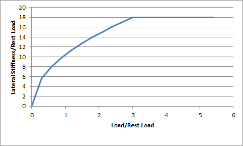
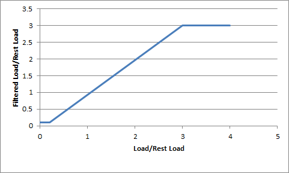

Vehicles¶
Introduction¶
PhysX support for vehicles has been significantly reworked in 3.x. In place of the NxWheelShape class of 2.8.x, a more optimal integration of the core PhysX SDK and vehicle simulation code has been developed. More specifically, the vehicles component now sits outside the core SDK in a manner similar to PhysXExtensions. This change allows vehicles to be updated in a single pass as well as promoting a more intuitive approach to modeling vehicle data. Vehicles support has been extended from the suspension/wheel/tire modeling of 2.8.x to a more complete model that couples modular vehicle components including engine, clutch, gears, autobox, differential, wheels, tires, suspensions, and chassis. A quick glance at the data structures in PxVehicleComponents.h will provide a flavor of the behaviors supported by PhysX vehicles.
Algorithm¶
The PhysX Vehicle SDK models vehicles as collections of sprung masses, where each sprung mass represents a suspension line with associated wheel and tire data. These collections of sprung masses have a complementary representation as a rigid body actor whose mass, center of mass, and moment of inertia matches exactly the masses and coordinates of the sprung masses. This is illustrated below.
{kind=link}
Figure 1a: Vehicle representation as a rigid body actor with shapes for the chassis and wheels. Note that the wheel rest offsets are specified relative to the center of mass.
{kind=link}
Figure 1b: Vehicle representation as a collection of sprung masses of mass M1 and M2.
The relationship between the sprung mass and rigid body vehicle representations can be mathematically formalized with the rigid body center of mass equations:
M = M1 + M2
Xcm = (M1 x X1 + M2 x X2)/(M1 + M2)
where M1 and M2 are the sprung masses; X1 and X2 are the sprung mass coordinates in actor space; M is the rigid body mass; and Xcm is the rigid body center of mass offset.
The purpose of the PhysX Vehicle SDK update function is to compute suspension and tire forces using the sprung mass model and then to apply the aggregate of these forces to the PhysX SDK rigid body representation in the form of a modified velocity and angular velocity. Interaction of the rigid body actor with other scene objects and global pose update is then managed by the PhysX SDK.
The update of each vehicle begins with a raycast for each suspension line. The raycast starts just above the the top of the tire at maximum compression and casts downwards along the direction of suspension travel to a position just below the bottom of the tire at maximum droop. This is shown in the diagram below.
{kind=link}
Figure 2: Suspension limits and suspension raycasts.
The suspension force from each elongated or compressed spring is computed and added to the aggregate force to be applied to the rigid body. Additionally, the suspension force is used to compute the load that is bearing down on the tire. This load is used to determine the tire forces that will be generated in the contact plane and then added to the aggregate force to be applied to the rigid body. The tire force computation actually depends on a number of factors including steer angle, camber angle, friction, wheel rotation speed, and rigid body momentum. The aggregated force of all tire and suspension forces is then applied to the rigid body actor associated with the vehicle so that the transform may be modified accordingly in the next PhysX SDK update.
In addition to being collections of sprung masses, PhysX vehicles also support a variety of drive models. The center of the drive model is a torsion clutch, which couples together the wheels and the engine via forces that arise from differences in rotational speeds at both sides of the clutch. At one side of the clutch is the engine, which is powered directly from the accelerator pedal. The engine is modeled as a rigid body whose motion is purely rotational and limited to a single degree of rotational freedom. At the other side of the clutch are the gearing system, the differential and the wheels. The effective rotational speed of the other side of the clutch can be computed directly from the gearing ratio and the rotational speed of the wheels that are coupled to the clutch through the differential. This model naturally allows engine torques to propagate to the wheels and wheel torques to propagate back to the engine, just as in a standard car.
The data describing each component of the PhysX vehicle can be found in Section Tuning Guide.
First Code¶
Vehicle SDK Initialization¶
Before using the vehicle SDK it must first be initialized in order to set up a number of threshold values from various tolerance scales. This is as straightforward as calling the following function:
PX_C_EXPORT bool PX_CALL_CONV PxInitVehicleSDK
(PxPhysics& physics, PxSerializationRegistry* serializationRegistry = NULL);
This function should be called after setting up the required PxPhysics and PxFoundation instances. If vehicle serialization is required a PxSerializationRegistry instance needs to be specified. A PxSerializationRegistry instance can be created with PxSerialization::createSerializationRegistry(), see Serialization.
The basis vectors of the vehicle simulation must also be configured so that longitudinal and lateral tire slips may be unambiguously computed:
void PxVehicleSetBasisVectors(const PxVec3& up, const PxVec3& forward);
This function can be called at any time prior to the first execution of PxVehicleUpdates.
The rigid body actors associated with vehicles can be updated either immediately with velocity modifications or updated with an acceleration that is applied in the next PhysX SDK simulate call. The following function can be used to select the required update mode:
void PxVehicleSetUpdateMode(PxVehicleUpdateMode::Enum vehicleUpdateMode);
As expected, the vehicle SDK also has a shutdown process which needs to be invoked:
PX_C_EXPORT void PX_CALL_CONV PxCloseVehicleSDK
(PxSerializationRegistry* serializationRegistry = NULL);
This needs to be called before the PxPhysics instance and PxFoundation instance are released; that is, the order of shutdown is the reverse of the initialization order. In addition if serialization is required the PxSerializationRegistry specified for PxInitVehicleSDK needs to be passed to PxCloseVehicleSDK. If vehicle serialization is used then this must be called before closing the PhysXExtensions.
As an illustration of the usage of these functions, SnippetVehicle4W has the following initialization code:
PxInitVehicleSDK(*gPhysics);
PxVehicleSetBasisVectors(PxVec3(0,1,0), PxVec3(0,0,1));
PxVehicleSetUpdateMode(PxVehicleUpdateMode::eVELOCITY_CHANGE);
The shutdown code in SnippetVehicle4W is as follows:
PxCloseVehicleSDK();
Introduction To Vehicle Creation¶
The following pseudo-code illustrates the basic process of setting up a PxVehicleDrive4W instance:
const PxU32 numWheels = 4;
PxVehicleWheelsSimData* wheelsSimData = PxVehicleWheelsSimData::allocate(numWheels);
setupWheelsSimulationData(wheelsSimData);
PxVehicleDriveSimData4W driveSimData;
setupDriveSimData(driveSimData);
PxRigidDynamic* vehActor = myPhysics.createRigidDynamic(startPose);
setupVehicleActor(vehActor);
myScene.addActor(*vehActor);
PxVehicleDrive4W* vehDrive4W = PxVehicleDrive4W::allocate(numWheels);
vehDrive4W->setup(physics, veh4WActor, *wheelsSimData, driveSimData, numWheels - 4);
wheelsSimData->free();
The code above first instantiates a PxVehicleWheelsSimData instance with internal buffers that are large enough to store configuration data for four wheels. This configuration data includes fields such as suspension strength and damping rate, wheel mass, tire stiffness and suspension travel direction. The next step is to create a PxVehicleDriveSimData4W instance. This structure stores the configuration of the drive model and includes data fields such as engine peak torque, clutch strength, gearing ratios, and Ackermann steering correction. Following this, a PxRigidDynamicActor is instantiated and configured with geometry for the wheels and chassis as well as dynamic properties such as mass, moment of inertia, and center of mass. The final step is to instantiate a PxVehicleDrive4W instance and associate it with the actor and the vehicle configuration data.
The functions setupWheelsSimulationData, setupDriveSimData and setupVehicleActor are actually quite involved and shall be discussed in future Sections setupWheelsSimulationData, setupDriveSimData and setupVehicleActor.
Introduction To Vehicle Update¶
The PhysX Vehicles SDK utilizes batched scene queries to query the geometry under each tire. A more detailed discussion of PhysX batched scene queries can be found in Section Batched queries.
The following pseudo-code initializes a batched scene query with buffers large enough for a single vehicle with four wheels:
PxRaycastQueryResult sqResults[4];
PxRaycastHit sqHitBuffer[4];
PxBatchQueryDesc sqDesc(4, 0, 0);
sqDesc.queryMemory.userRaycastResultBuffer = sqResults;
sqDesc.queryMemory.userRaycastTouchBuffer = sqHitBuffer;
sqDesc.queryMemory.raycastTouchBufferSize = 4;
sqDesc.preFilterShader = myFilterShader;
PxBatchQuery* batchQuery = scene->createBatchQuery(sqDesc);
The PxBatchQuery instance is typically instantiated as part of the initialization phase and then reused each frame. It is possible to instantiate a PxBatchQuery instance for each vehicle or to instantiate a single PxBatchQuery instance with buffers large enough for all wheels of a batched array of vehicles. The only restriction is that all batched vehicle arrays and associated buffers configured at the start of a vehicle simulation frame must persist until the end of the vehicle simulation frame.
PhysX vehicles make use of scene query filter shaders to eliminate intersections with the vehicle issuing the raycast and with any geometry that is not to be considered as a drivable surface. More details for how to set up "myFilterShader" above can be found in Section Filtering.
For a batch containing just a single 4-wheeled vehicle the suspension raycasts can be performed with the following pseudo-code:
PxVehicleWheels* vehicles[1] = {myVehicle};
PxVehicleSuspensionRaycasts(batchQuery, 1, vehicles, 4, sqResults);
The function PxVehicleSuspensionRaycasts performs suspension raycasts for all vehicles in the batched array of vehicles. Each element in the sqResults array corresponds to the raycast report for a single suspension. Pointers to contiguous blocks within sqResults are stored by each vehicle in turn as the function iterates through the vehicles array. These memory blocks are stored by each vehicle so that they may easily query the suspension raycast results in PxVehicleUpdates. As a consequence, the sqResults array must persist until at least the end of PxVehicleUpdates and must have length at least as large as the total number of wheels in the vehicles array.
The vehicles are updated with the following function call:
PxVehicleUpdates(timestep, gravity, frictionPairs, 1, vehicles, NULL);
The function PxVehicleUpdates updates the internal dynamics of each vehicle, poses the wheel shapes of the vehicle's actor and applies either velocity or acceleration changes to the actor, depending on the update mode chosen with PxVehicleSetUpdateMode. More details can be found in Section Wheel Pose and Section Vehicle Update. The parameter frictionPairs is basically a lookup table that associates unique friction values with combinations of tire type and PxMaterial. The idea here is to allow tire response to be tuned for each surface type. This shall be discussed in more depth in Section Tire Friction on Drivable Surfaces.
Snippets¶
Four snippets are currently implemented to illustrate the operation of the PhysX Vehicles SDK. These are:
1. SnippetVehicle4W
2. SnippetVehicleTank
3. SnippetNoDrive
3. SnippetVehicleScale
4. SnippetVehicleMultiThreading
5. SnippetVehicleWheelContactMod
Code snippets from each of these is used throughout the guide.
SnippetVehicle4W¶
SnippetVehicle4W demonstrates how to instantiate and update vehicles of type PxVehicleDrive4W. It creates a vehicle on a plane and then controls the vehicle so that it performs a number of choreographed maneuvers such as accelerate, reverse, brake, handbrake, and turn.
SnippetVehicleTank¶
SnippetVehicleTank demonstrates how to instantiate and update vehicles of type PxVehicleDriveTank. It creates a tank on a plane and then controls the tank so that it performs a number of choreographed maneuvers such as accelerate, reverse, soft turns, and hard turns.
SnippetVehicleNoDrive¶
SnippetVehicleNoDrive demonstrates how to instantiate and update vehicles of type PxVehicleNoDrive. It creates a vehicle on a plane and then controls the vehicle so that it performs a number of choreographed manoeuvres such as accelerate, reverse, soft turns, and hard turns.
SnippetVehicleScale¶
SnippetVehicleScale demonstrates how to configure a PhysX vehicle when meters are not the chosen length scale. The snippet sets up a vehicle with meters as the adopted length scale and then modifies the vehicle parameters so that they represent the same vehicle but with centimeters as the chosen length scale.
SnippetVehicleMultiThreading¶
SnippetVehicleMultiThreading demonstrates how to implement multi-threaded vehicles. It creates multiple vehicles on a plane and then concurrently simulates them in parallel across multiple threads.
Advanced Concepts¶
Vehicle Creation¶
This Section discusses the configuration of vehicle simulation data and describes how to set up an actor that will represent the vehicle in the PhysX SDK. Section Introduction To Vehicle Creation identified three distinct phases of vehicle configuration: configuration of wheel simulation data, configuration of drive simulation data and actor configuration. Each of these phases is discussed in turn.
setupWheelsSimulationData¶
The following code, taken from SnippetVehicle4W, instantiates a PxVehicleWheelsSimData:
void setupWheelsSimulationData(const PxF32 wheelMass, const PxF32 wheelMOI,
const PxF32 wheelRadius, const PxF32 wheelWidth, const PxU32 numWheels,
const PxVec3* wheelCenterActorOffsets, const PxVec3& chassisCMOffset,
const PxF32 chassisMass, PxVehicleWheelsSimData* wheelsSimData)
{
//Set up the wheels.
PxVehicleWheelData wheels[PX_MAX_NB_WHEELS];
{
//Set up the wheel data structures with mass, moi, radius, width.
for(PxU32 i = 0; i < numWheels; i++)
{
wheels[i].mMass = wheelMass;
wheels[i].mMOI = wheelMOI;
wheels[i].mRadius = wheelRadius;
wheels[i].mWidth = wheelWidth;
}
//Enable the handbrake for the rear wheels only.
wheels[PxVehicleDrive4WWheelOrder::eREAR_LEFT].mMaxHandBrakeTorque=4000.0f;
wheels[PxVehicleDrive4WWheelOrder::eREAR_RIGHT].mMaxHandBrakeTorque=4000.0f;
//Enable steering for the front wheels only.
wheels[PxVehicleDrive4WWheelOrder::eFRONT_LEFT].mMaxSteer=PxPi*0.3333f;
wheels[PxVehicleDrive4WWheelOrder::eFRONT_RIGHT].mMaxSteer=PxPi*0.3333f;
}
//Set up the tires.
PxVehicleTireData tires[PX_MAX_NB_WHEELS];
{
//Set up the tires.
for(PxU32 i = 0; i < numWheels; i++)
{
tires[i].mType = TIRE_TYPE_NORMAL;
}
}
//Set up the suspensions
PxVehicleSuspensionData suspensions[PX_MAX_NB_WHEELS];
{
//Compute the mass supported by each suspension spring.
PxF32 suspSprungMasses[PX_MAX_NB_WHEELS];
PxVehicleComputeSprungMasses
(numWheels, wheelCenterActorOffsets,
chassisCMOffset, chassisMass, 1, suspSprungMasses);
//Set the suspension data.
for(PxU32 i = 0; i < numWheels; i++)
{
suspensions[i].mMaxCompression = 0.3f;
suspensions[i].mMaxDroop = 0.1f;
suspensions[i].mSpringStrength = 35000.0f;
suspensions[i].mSpringDamperRate = 4500.0f;
suspensions[i].mSprungMass = suspSprungMasses[i];
}
//Set the camber angles.
const PxF32 camberAngleAtRest=0.0;
const PxF32 camberAngleAtMaxDroop=0.01f;
const PxF32 camberAngleAtMaxCompression=-0.01f;
for(PxU32 i = 0; i < numWheels; i+=2)
{
suspensions[i + 0].mCamberAtRest = camberAngleAtRest;
suspensions[i + 1].mCamberAtRest = -camberAngleAtRest;
suspensions[i + 0].mCamberAtMaxDroop = camberAngleAtMaxDroop;
suspensions[i + 1].mCamberAtMaxDroop = -camberAngleAtMaxDroop;
suspensions[i + 0].mCamberAtMaxCompression = camberAngleAtMaxCompression;
suspensions[i + 1].mCamberAtMaxCompression = -camberAngleAtMaxCompression;
}
}
//Set up the wheel geometry.
PxVec3 suspTravelDirections[PX_MAX_NB_WHEELS];
PxVec3 wheelCentreCMOffsets[PX_MAX_NB_WHEELS];
PxVec3 suspForceAppCMOffsets[PX_MAX_NB_WHEELS];
PxVec3 tireForceAppCMOffsets[PX_MAX_NB_WHEELS];
{
//Set the geometry data.
for(PxU32 i = 0; i < numWheels; i++)
{
//Vertical suspension travel.
suspTravelDirections[i] = PxVec3(0,-1,0);
//Wheel center offset is offset from rigid body center of mass.
wheelCentreCMOffsets[i] =
wheelCenterActorOffsets[i] - chassisCMOffset;
//Suspension force application point 0.3 metres below
//rigid body center of mass.
suspForceAppCMOffsets[i] =
PxVec3(wheelCentreCMOffsets[i].x,-0.3f,wheelCentreCMOffsets[i].z);
//Tire force application point 0.3 metres below
//rigid body center of mass.
tireForceAppCMOffsets[i] =
PxVec3(wheelCentreCMOffsets[i].x,-0.3f,wheelCentreCMOffsets[i].z);
}
}
//Set up the filter data of the raycast that will be issued by each suspension.
PxFilterData qryFilterData;
setupNonDrivableSurface(qryFilterData);
//Set the wheel, tire and suspension data.
//Set the geometry data.
//Set the query filter data
for(PxU32 i = 0; i < numWheels; i++)
{
wheelsSimData->setWheelData(i, wheels[i]);
wheelsSimData->setTireData(i, tires[i]);
wheelsSimData->setSuspensionData(i, suspensions[i]);
wheelsSimData->setSuspTravelDirection(i, suspTravelDirections[i]);
wheelsSimData->setWheelCentreOffset(i, wheelCentreCMOffsets[i]);
wheelsSimData->setSuspForceAppPointOffset(i, suspForceAppCMOffsets[i]);
wheelsSimData->setTireForceAppPointOffset(i, tireForceAppCMOffsets[i]);
wheelsSimData->setSceneQueryFilterData(i, qryFilterData);
wheelsSimData->setWheelShapeMapping(i, i);
}
}
The function PxVehicleComputeSprungMasses computes the sprung mass of each suspension so that they collectively match the rigid body center of mass. This is performed in the frame of the actor. It makes sense to perform PxVehicleComputeSprungMasses in the frame of the actor because the rigid body center of mass is always specified in the actor's frame. The vehicle suspension system, on the other hand, is specified in the center of mass frame. As a consequence, the functions setWheelCentreOffset, setSuspForceAppPointOffset and setTireForceAppPointOffset all describe offsets from the rigid body center of mass. The directness of this approach can make changes to the rigid body center of mass a bit more involved than might be expected. To solve this problem the function PxVehicleUpdateCMassLocalPose has been introduced, though not used in the code above. This function recomputes and sets all suspension offsets, recomputes the sprung masses and sets them in a way that preserves the natural frequency and damping ratio of each spring.
Details of many of the parameters and functions above can be found in Section Tuning Guide. The function setupNonDrivableSurface, which sets up scene query filter data for each suspension raycast, shall be discussed in more detail in Section Filtering. Further, the link between TIRE_TYPE_NORMAL and tire friction shall be made clear in Section Tire Friction on Drivable Surfaces. Finally, the use of the function setWheelShapeMapping shall be clarified in Section Wheel Pose.
setupDriveSimData¶
The following code, taken from SnippetVehicle4W, instantiates a PxVehicleDriveSimData4W:
PxVehicleDriveSimData4W driveSimData;
{
//Diff
PxVehicleDifferential4WData diff;
diff.mType=PxVehicleDifferential4WData::eDIFF_TYPE_LS_4WD;
driveSimData.setDiffData(diff);
//Engine
PxVehicleEngineData engine;
engine.mPeakTorque=500.0f;
engine.mMaxOmega=600.0f;//approx 6000 rpm
driveSimData.setEngineData(engine);
//Gears
PxVehicleGearsData gears;
gears.mSwitchTime=0.5f;
driveSimData.setGearsData(gears);
//Clutch
PxVehicleClutchData clutch;
clutch.mStrength=10.0f;
driveSimData.setClutchData(clutch);
//Ackermann steer accuracy
PxVehicleAckermannGeometryData ackermann;
ackermann.mAccuracy=1.0f;
ackermann.mAxleSeparation=
wheelsSimData->getWheelCentreOffset(PxVehicleDrive4WWheelOrder::eFRONT_LEFT).z-
wheelsSimData->getWheelCentreOffset(PxVehicleDrive4WWheelOrder::eREAR_LEFT).z;
ackermann.mFrontWidth=
wheelsSimData->getWheelCentreOffset(PxVehicleDrive4WWheelOrder::eFRONT_RIGHT).x-
wheelsSimData->getWheelCentreOffset(PxVehicleDrive4WWheelOrder::eFRONT_LEFT).x;
ackermann.mRearWidth=
wheelsSimData->getWheelCentreOffset(PxVehicleDrive4WWheelOrder::eREAR_RIGHT).x-
wheelsSimData->getWheelCentreOffset(PxVehicleDrive4WWheelOrder::eREAR_LEFT).x;
driveSimData.setAckermannGeometryData(ackermann);
}
Details of many of the parameters and functions above can be found in Section Tuning Guide.
Configuring PxVehicleDriveSimDataNW and PxVehicleDriveSimDataTank instances follow a very similar procedure, albeit with slightly different components. More details can be found, for example, in SnippetVehicleTank.
setupVehicleActor¶
The following code, common to all vehicle snippets, sets up a rigid dynamic actor with geometry, filter and dynamics data:
PxRigidDynamic* createVehicleActor
(const PxVehicleChassisData& chassisData,
PxMaterial** wheelMaterials, PxConvexMesh** wheelConvexMeshes, const PxU32 numWheels, const PxFilterData& wheelSimFilterData,
PxMaterial** chassisMaterials, PxConvexMesh** chassisConvexMeshes, const PxU32 numChassisMeshes, const PxFilterData& chassisSimFilterData,
PxPhysics& physics)
{
//We need a rigid body actor for the vehicle.
//Don't forget to add the actor to the scene after setting up the associated vehicle.
PxRigidDynamic* vehActor = physics.createRigidDynamic(PxTransform(PxIdentity));
//Wheel and chassis query filter data.
//Optional: cars don't drive on other cars.
PxFilterData wheelQryFilterData;
setupNonDrivableSurface(wheelQryFilterData);
PxFilterData chassisQryFilterData;
setupNonDrivableSurface(chassisQryFilterData);
//Add all the wheel shapes to the actor.
for(PxU32 i = 0; i < numWheels; i++)
{
PxConvexMeshGeometry geom(wheelConvexMeshes[i]);
PxShape* wheelShape=PxRigidActorExt::createExclusiveShape(*vehActor, geom, *wheelMaterials[i]);
wheelShape->setQueryFilterData(wheelQryFilterData);
wheelShape->setSimulationFilterData(wheelSimFilterData);
wheelShape->setLocalPose(PxTransform(PxIdentity));
}
//Add the chassis shapes to the actor.
for(PxU32 i = 0; i < numChassisMeshes; i++)
{
PxShape* chassisShape=PxRigidActorExt::createExclusiveShape(*vehActor, PxConvexMeshGeometry(chassisConvexMeshes[i]), *chassisMaterials[i]);
chassisShape->setQueryFilterData(chassisQryFilterData);
chassisShape->setSimulationFilterData(chassisSimFilterData);
chassisShape->setLocalPose(PxTransform(PxIdentity));
}
vehActor->setMass(chassisData.mMass);
vehActor->setMassSpaceInertiaTensor(chassisData.mMOI);
vehActor->setCMassLocalPose(PxTransform(chassisData.mCMOffset,PxQuat(PxIdentity)));
return vehActor;
}
The significance of wheelSimFilterData, chassisSimFilterData, wheelQryFilterData and chassisQryFilterData shall be discussed in Section Filtering. Further, the link between the ordering of the wheel shapes in the above code and the function PxVehicleWheelsSimData::setWheelShapeMapping is clarified in Section Wheel Pose.
Filtering¶
In this Section the concepts behind vehicle query and vehicle simulation filtering shall be described.
The key goal of scene query and simulation filtering for vehicles is to ensure that vehicles are supported by suspension spring forces without interference from wheel shape intersection. The requirements for filtering are then as follows:
1. wheel shapes must not hit drivable surfaces
2. suspension raycasts can hit drivable surfaces
3. suspension raycasts must not hit the shapes of the vehicle issuing the raycasts
Ensuring that wheel shapes don't hit drivable surfaces can be achieved with simulation filtering. This is discussed in more detail in Section Collision Filtering. The vehicle snippets use the following simulation filter shader:
PxFilterFlags VehicleFilterShader
(PxFilterObjectAttributes attributes0, PxFilterData filterData0,
PxFilterObjectAttributes attributes1, PxFilterData filterData1,
PxPairFlags& pairFlags, const void* constantBlock, PxU32 constantBlockSize)
{
PX_UNUSED(attributes0);
PX_UNUSED(attributes1);
PX_UNUSED(constantBlock);
PX_UNUSED(constantBlockSize);
if( (0 == (filterData0.word0 & filterData1.word1)) && (0 == (filterData1.word0 & filterData0.word1)) )
return PxFilterFlag::eSUPPRESS;
pairFlags = PxPairFlag::eCONTACT_DEFAULT;
pairFlags |= PxPairFlags(PxU16(filterData0.word2 | filterData1.word2));
return PxFilterFlags();
}
The snippets also apply simulation filter data to wheel shapes as follows:
PxFilterData wheelSimFilterData;
wheelSimFilterData.word0 = COLLISION_FLAG_WHEEL;
wheelSimFilterData.word1 = COLLISION_FLAG_WHEEL_AGAINST;
...
wheelShape->setSimulationFilterData(wheelSimFilterData);
Finally, the following simulation filter data is applied to drivable surfaces:
PxFilterData simFilterData;
simFilterData.word0 = COLLISION_FLAG_GROUND;
simFilterData.word1 = COLLISION_FLAG_GROUND_AGAINST;
...
shapes[0]->setSimulationFilterData(simFilterData);
The combination of collision flags (COLLISION_FLAG_WHEEL, COLLISION_FLAG_GROUND_AGAINST etc) and filter shader ensures that wheel shapes don't collide with drivable surfaces.
A remarkably similar process may be employed to configure the complementary scene query filters. This is accomplished in the vehicle snippets with the following code:
void setupDrivableSurface(PxFilterData& filterData)
{
filterData.word3 = (PxU32)DRIVABLE_SURFACE;
}
void setupNonDrivableSurface(PxFilterData& filterData)
{
filterData.word3 = UNDRIVABLE_SURFACE;
}
PxQueryHitType::Enum WheelRaycastPreFilter
(PxFilterData filterData0, PxFilterData filterData1,
const void* constantBlock, PxU32 constantBlockSize,
PxHitFlags& queryFlags)
{
//filterData0 is the vehicle suspension raycast.
//filterData1 is the shape potentially hit by the raycast.
PX_UNUSED(constantBlockSize);
PX_UNUSED(constantBlock);
PX_UNUSED(filterData0);
PX_UNUSED(queryFlags);
return ((0 == (filterData1.word3 & DRIVABLE_SURFACE)) ?
PxQueryHitType::eNONE : PxQueryHitType::eBLOCK);
}
Each vehicle wheel is given filter data configured with setupNonDrivableSurface and passed to the vehicle with:
wheelsSimData->setSceneQueryFilterData(i, qryFilterData);
The parameter filterData0 in WheelRaycastPreFilter corresponds to the parameter qryFilterData passed to the vehicle with PxVehiceWheelsSimData::setSceneQueryFilterData. The parameter filterData1, on the other hand, corresponds to the query filter data of a shape potentially hit by the raycast. In the vehicle snippets the shape of the drivable ground plane has scene query filter data configured with the function setupDrivableSurface. This satisfies the requirement that suspension raycasts can hit drivable surfaces. Vehicle shapes, on the other hand, are configured with setupNonDrivableSurface. This satisfies the restriction that suspension raycasts must not hit the vehicle issuing the raycasts but also prevents vehicles from driving on any other vehicles that might be added to the scene. This extra restriction could readily be avoided by employing a more complex filter shader that perhaps exploits unique IDs encoded in both the shape filter data and the filter data applied to the query itself. Care must be taken, however, to configure the filters to ensure that suspension raycasts only interact with the shapes of other vehicles.
Note
It is vital that WheelRaycastPreFilter returns PxQueryHitType::eBLOCK if a raycast hit is allowed for the filter data pair. Using PxQueryHitType::eBLOCK guarantees that each raycast returns either no hits or just the hit closest to the start point of the raycast. This is important because PxVehicleSuspensionRaycasts and PxVehicleUpdates expect a one-to-one correspondence between each wheel and each element in the PxRaycastQueryResult and PxRaycastHit arrays passed to the batch query.
Tire Friction on Drivable Surfaces¶
In this Section setting up tire types, drivable surface types, and tire friction on combinations of tire and surface type shall be discussed.
To implement a unique friction value for each combination of tire type and surface type it is first necessary to assign tire types to tires. In Section setupWheelsSimulationData a tire type was assigned to each tire:
//Set up the tires.
PxVehicleTireData tires[PX_MAX_NB_WHEELS];
{
//Set up the tires.
for(PxU32 i = 0; i < numWheels; i++)
{
tires[i].mType = TIRE_TYPE_NORMAL;
}
}
Assigning a type to each surface is a little more complex. The basic idea is that each suspension raycast hit returns the PxMaterial of the shape hit by the raycast. With knowledge of a PxMaterial array it is possible to associate the type of a hit surface with the index of the PxMaterial array element that matches the material hit by the raycast. This lookup and the table of friction values is managed by the class PxVehicleDrivableSurfaceToTireFrictionPairs. To make the feature more general each element of the PxMaterial array is actually associated with a PxVehicleDrivableSurfaceType instance. This allows multiple PxMaterial instances to share the same surface type.
In the vehicle snippets the following code makes the association between PxMaterial and surface type and then associates each combination of tire and surface type with a friction value:
PxVehicleDrivableSurfaceToTireFrictionPairs* createFrictionPairs
(const PxMaterial* defaultMaterial)
{
PxVehicleDrivableSurfaceType surfaceTypes[1];
surfaceTypes[0].mType = SURFACE_TYPE_TARMAC;
PxMaterial* surfaceMaterials[1];
surfaceMaterials[0] = defaultMaterial;
PxVehicleDrivableSurfaceToTireFrictionPairs* surfaceTirePairs =
PxVehicleDrivableSurfaceToTireFrictionPairs::allocate(MAX_NUM_TIRE_TYPES,
MAX_NUM_SURFACE_TYPES);
surfaceTirePairs->setup(MAX_NUM_TIRE_TYPES, MAX_NUM_SURFACE_TYPES,
surfaceMaterials, surfaceTypes);
for(PxU32 i = 0; i < MAX_NUM_SURFACE_TYPES; i++)
{
for(PxU32 j = 0; j < MAX_NUM_TIRE_TYPES; j++)
{
surfaceTirePairs->setTypePairFriction(i,j,gTireFrictionMultipliers[i][j]);
}
}
return surfaceTirePairs;
}
Note
It is not necessary to provide an exhaustive array of all materials. If PxVehicleDrivableSurfaceToTireFrictionPairs has no knowledge of the hit material it assumes a value of zero for the surface type.
There is no upper bound on the friction values used in the PhysX vehicles SDK. Although the maximum value of friction that obeys the laws of physics is 1.0, the PhysX vehicles SDK purposefully does not enforce this rule. One reason for this is that the vehicle model is far from a complete description of a real vehicle, meaning that some liberties need to be taken with friction values to generate the desired behavior. A more complete model would certainly provide greater accuracy given a specific set of vehicle parameters but it is not at all clear that it would provide a greater range of editable and controllable behaviors or have the performance characteristics required for games. Another reason that friction is not clamped at 1.0 is that games typically simulate the physics update at 60Hz. This comes at a cost to numerical accuracy, especially when there are a number of transient tire effects that require KHz update frequencies. One source of numerical accuracy is the amplitude of oscillation of the suspension, which is governed in turn by the distance that the vehicle falls under gravity between each update. At KHz update frequencies this simulation artifact is acceptably small, but not at 60Hz. The last reason is that there is simply no need to impose the strict rules of friction on the vehicles SDK. This can allow interesting behaviors to be generated that would perhaps be impossible when constrained by the laws of rigid body and tire dynamics. Having said all this, however, the implemented model simulated at 60Hz ought to have enough integrity that only small tweaks above 1.0 should be necessary. If very large friction values are required, say greater than 2.0, then it is likely that something is wrong with the update order or perhaps very unphysical vehicle data has been used.
A PxVehicleDrivableSurfaceToTireFrictionPairs instance is passed as a function argument for each call to PxVehicleUpdates. Each instance of PxVehicleDrivableSurfaceToTireFrictionPairs need only persist for the duration of PxVehicleUpdates. It is perfectly legal to edit the tire types, materials and friction values in-between calls to PxVehicleUpdates. Editing any of these values while PxVehicleUpdates is still executing will lead to undefined behavior.
Vehicle Controls¶
In this Section setting the control values used to drive a vehicle shall be discussed.
The simplest and most direct way to set vehicle control values is to use the following function:
void PxVehicleDriveDynData::setAnalogInput(const PxReal analogVal, const PxU32 type);
One of the difficulties with vehicle dynamics in games is knowing how to filter the raw controller data in a way that results in pleasing handling. Players, for example, often accelerate by pressing very quickly on the accelerator trigger in a way would never happen in a real car. This rapid acceleration can have a counter-productive effect because the resulting wheel spin reduces the lateral and longitudinal forces that can be generated by the tire. To help overcome some of these problems some optional code has been provided to filter the control data from keyboard and gamepad.
A solution to the problem of filtering controller input data is to assign a rise and fall rate to each button or pad. For analog values under digital control it is possible to simply increase or decrease the analog value at a specified rate depending on whether the digital input is on or off. For analog values under analog control it makes more sense to blend from the previous input value to the current input at a specified rate. A slight complication to this simple model is that the difficulty of achieving a large steer angle at large speed must also be modeled. One technique to achieve this would be to model the forces from the tires' aligning moments and apply these to a steering linkage model. This sounds rather complicated and quite difficult to tune. A simpler solution might be to scale the filtered steer value by another value in range (0,1) that decreases at high speed. This simpler method has been implemented in the helper classes and functions.
Rise and fall rates for digital and analog control have been hard-coded in SnippetVehicle4W:
PxVehicleKeySmoothingData gKeySmoothingData=
{
{
3.0f, //rise rate eANALOG_INPUT_ACCEL
3.0f, //rise rate eANALOG_INPUT_BRAKE
10.0f, //rise rate eANALOG_INPUT_HANDBRAKE
2.5f, //rise rate eANALOG_INPUT_STEER_LEFT
2.5f, //rise rate eANALOG_INPUT_STEER_RIGHT
},
{
5.0f, //fall rate eANALOG_INPUT__ACCEL
5.0f, //fall rate eANALOG_INPUT__BRAKE
10.0f, //fall rate eANALOG_INPUT__HANDBRAKE
5.0f, //fall rate eANALOG_INPUT_STEER_LEFT
5.0f //fall rate eANALOG_INPUT_STEER_RIGHT
}
};
PxVehiclePadSmoothingData gPadSmoothingData=
{
{
6.0f, //rise rate eANALOG_INPUT_ACCEL
6.0f, //rise rate eANALOG_INPUT_BRAKE
12.0f, //rise rate eANALOG_INPUT_HANDBRAKE
2.5f, //rise rate eANALOG_INPUT_STEER_LEFT
2.5f, //rise rate eANALOG_INPUT_STEER_RIGHT
},
{
10.0f, //fall rate eANALOG_INPUT_ACCEL
10.0f, //fall rate eANALOG_INPUT_BRAKE
12.0f, //fall rate eANALOG_INPUT_HANDBRAKE
5.0f, //fall rate eANALOG_INPUT_STEER_LEFT
5.0f //fall rate eANALOG_INPUT_STEER_RIGHT
}
};
A look-up table has also been specified to describe the maximum steer as a function of speed:
PxF32 gSteerVsForwardSpeedData[2*8]=
{
0.0f, 0.75f,
5.0f, 0.75f,
30.0f, 0.125f,
120.0f, 0.1f,
PX_MAX_F32, PX_MAX_F32,
PX_MAX_F32, PX_MAX_F32,
PX_MAX_F32, PX_MAX_F32,
PX_MAX_F32, PX_MAX_F32
};
PxFixedSizeLookupTable<8> gSteerVsForwardSpeedTable(gSteerVsForwardSpeedData,4);
Using a PxVehicleDrive4WRawInputData instance it is straightforward to record the user inputs in the event a keyboard is used:
gVehicleInputData.setDigitalAccel(true);
gVehicleInputData.setDigitalBrake(true);
gVehicleInputData.setDigitalHandbrake(true);
gVehicleInputData.setDigitalSteerLeft(true);
gVehicleInputData.setDigitalSteerRight(true);
gVehicleInputData.setGearUp(true);
gVehicleInputData.setGearDown(true);
or in the event that a gamepad is used:
gVehicleInputData.setAnalogAccel(1.0f);
gVehicleInputData.setAnalogBrake(1.0f);
gVehicleInputData.setAnalogHandbrake(1.0f);
gVehicleInputData.setAnalogSteer(1.0f);
gVehicleInputData.setGearUp(1.0f);
gVehicleInputData.setGearDown(1.0f);
Here, gVehicleInputData is an instance of the vehicle SDK helper class PxVehicleDrive4WRawInputData.
The vehicle SDK offers two optional functions to smooth the keyboard or gamepad data and apply the smoothed input values to the PhysX vehicle. If the vehicle is controlled by digital inputs then the following function is used:
PxVehicleDrive4WSmoothDigitalRawInputsAndSetAnalogInputs(gKeySmoothingData,
gSteerVsForwardSpeedTable, carRawInputs,timestep,isInAir,(PxVehicleDrive4W&)focusVehicle);
while gamepad controllers employ the following code:
PxVehicleDrive4WSmoothAnalogRawInputsAndSetAnalogInputs(gCarPadSmoothingData,
gSteerVsForwardSpeedTable, carRawInputs,timestep,(PxVehicleDrive4W&)focusVehicle);
The code above smoothes the controller inputs and applies them to a PxVehicleDrive4W instance. For other vehicle types the process is remarkably similar, except with complementary classes and functions designed for each vehicle type.
Vehicle Update¶
It has already been mentioned that vehicles are updated in two stages:
- specific vehicle code that updates the vehicle internal dynamics and computes forces/torques to apply to the vehicle's rigid body representation
- an SDK update that accounts for the applied forces/torques as well as collision with other scene bodies.
In Section Introduction To Vehicle Update the functions used to perform the raycast and vehicle updates were introduced. In this Section these separate update phases will be discussed in more detail.
Raycast and Update Ordering¶
Prior to the first time that a vehicle is updated in PxVehicleUpdates, it must have already performed suspension line raycasts at least once with PxVehicleSuspensionRaycasts. In subsequent updates it is not strictly necessary to issue fresh raycasts because each vehicle caches raycast hit planes that can be re-used. It is recommended that there is a one-to-one correspondence between raycast completion and updates for each vehicle except for the case of vehicles that only require a low level of detail. This might include cars that are far from the camera or where it is known that the vehicle is driving on geometry with high spatial coherence. Support for vehicles that require only a low level of detail is discussed in Section Level of Detail.
There is some freedom in the order in which raycasts can be issued relative to the vehicle dynamics update. In a real-world situation it might be that raycasts can be issued on a separate thread at the end of the update loop so that they are ready for the beginning of the next. However, this really all depends on the threading environment and the ordering of rigid body updates.
Wheel Pose¶
PxVehicleUpdates poses the wheels shapes of the vehicle's actor to take account of the steer, camber, and rotation angles. The computed pose also attempts to place the wheel geometry exactly on the contact plane identified by the raycast that was issued along the suspension line. To perform this function the PhysX Vehicles SDK needs to know which shapes of the actor correspond to each wheel of the vehicle. This is achieved with the function PxVehicleWheelsSimData::setWheelShapeMapping.
Note
The vehicle SDK has a default mapping for each wheel that is equivalent to PxVehicleWheelsSimData::setWheelShapeMapping(i,i). This needs corrected if the layout of the shapes is different from the default pattern.
Note
PxVehicleWheelsSimData::setWheelShapeMapping(i,-1) can be called to disable setting the local wheel pose. This is particularly useful if a wheel has no corresponding actor geometry.
The wheel pose is always within the limits imposed by PxVehicleSuspensionData::mMaxDroop and PxVehicleSuspensionData::mMaxCompression. If the suspension raycast hit plane requires the wheel to be placed beyond the compression limit the wheel will be placed at the compression limit and a rigid body constraint will handle the difference in the next SDK simulate() call.
Vehicle State Queries¶
Each vehicle stores persistent simulation data that is updated each time PxVehicleUpdates is called. Examples of persistent data include wheel rotation speeds, wheel rotation angle, and wheel rotation speed. Additionally, a large amount of non-persistent data is computed during each update. This non-persistent data is not stored in the vehicle's own data structures. Instead, a data buffer is passed to PxVehicleUpdates and queried after PxVehicleUpdates completes. Examples of non-persistent data include suspension jounce, tire force and raycast hit actor. The combination of these two data types allows an almost complete snapshot of the state of the vehicle and can be used to trigger secondary effects such as skid marks, engine and clutch audio, and smoke particles.
Persistent wheel data is stored in PxVehicleWheelsDynData, while persistent drive model data is stored in PxVehicleDriveDynData. The most useful functions are the following:
PX_FORCE_INLINE PxReal PxVehicleDriveDynData::getEngineRotationSpeed() const;
PxReal PxVehicleWheelsDynData::getWheelRotationSpeed(const PxU32 wheelIdx) const;
PxReal PxVehicleWheelsDynData::getWheelRotationAngle(const PxU32 wheelIdx) const;
To record non-persistent simulation data so that it may be later be queried an extra function argument must be passed to PxVehicleUpdates. The following pseudo-code records non-persistent data for a single 4-wheeled car:
PxWheelQueryResult wheelQueryResults[4];
PxVehicleWheelQueryResult vehicleWheelQueryResults[1] = {{wheelQueryResults, 4}};
PxVehicleUpdates(timestep, gravity, frictionPairs, 1, vehicles, vehicleWheelQueryResults);
Here, a PxVehicleWheelQueryResult array, whose length equals at least the number of vehicles in the batched vehicles array, is passed to PxVehicleUpdates. Each PxVehicleWheelQueryResult instance has a pointer to a PxWheelQueryResult buffer, whose length equals at least the number of wheels in the vehicle. After PxVehicleUpdates is complete the state of each each vehicle wheel may be inspected.
It is not obligatory to record non-persistent data for later query. Indeed, it is perfect legal to associate a vehicle with a NULL data block to avoid storing non-persistent wheel data. This feature allows memory budgets to be targeted at the vehicles of highest interest.
More Advanced Concepts¶
Vehicle Telemetry¶
The purpose of telemetry data is to expose the inner dynamics of the car and aid handling tuning through the use of telemetry graphs. In this Section initialization, collection, and rendering of telemetry data shall be discussed.
Telemetry data is recorded by calling the following function:
void PxVehicleUpdateSingleVehicleAndStoreTelemetryData
(const PxReal timestep, const PxVec3& gravity,
const PxVehicleDrivableSurfaceToTireFrictionPairs& vehicleDrivableSurfaceToTireFrictionPairs,
PxVehicleWheels* focusVehicle, PxVehicleWheelQueryResult* vehicleWheelQueryResults,
PxVehicleTelemetryData& telemetryData);
The function above is identical to PxVehicleUpdates with the exception that it can only update a single vehicle at a time and takes an extra function argument telemetryData.
Setting up the telemetry data is relatively straightforward. In addition to storing the telemetry data streams, the PxVehicleTelemetryData structure also stores data describing the size, position, and color scheme of the graph. The following pseudo-code initializes and configures telemetry data for a 4-wheeled vehicle:
PxVehicleTelemetryData* myTelemetryData = PxVehicleTelemetryData::allocate(4);
const PxF32 graphSizeX=0.25f;
const PxF32 graphSizeY=0.25f;
const PxF32 engineGraphPosX=0.5f;
const PxF32 engineGraphPosY=0.5f;
const PxF32 wheelGraphPosX[4]={0.75f,0.25f,0.75f,0.25f};
const PxF32 wheelGraphPosY[4]={0.75f,0.75f,0.25f,0.25f};
const PxVec3 backgroundColor(255,255,255);
const PxVec3 lineColorHigh(255,0,0);
const PxVec3 lineColorLow(0,0,0);
myTelemetryData->setup
(graphSizeX,graphSizeY,
engineGraphPosX,engineGraphPosY,
wheelGraphPosX,wheelGraphPosY,
backgroundColor,lineColorHigh,lineColorLow);
The sizes, positions, and colors are all values that will be used to render the graphs. The exact values of these fields will depend on the coordinate system and color coding used to visualize the telemetry data.
In the above example, the coordinates have been configured to render an engine-related graph in the center of the screen under the assumption that (1,1) is the top left-hand side of the screen and (0,0) the bottom right-hand side of the screen. Screen coordinates have also been specified for rendering data associated with each of the four wheels.
The following enumerated lists detail the telemetry data that is collected:
enum
{
eCHANNEL_JOUNCE=0,
eCHANNEL_SUSPFORCE,
eCHANNEL_TIRELOAD,
eCHANNEL_NORMALISED_TIRELOAD,
eCHANNEL_WHEEL_OMEGA,
eCHANNEL_TIRE_FRICTION,
eCHANNEL_TIRE_LONG_SLIP,
eCHANNEL_NORM_TIRE_LONG_FORCE,
eCHANNEL_TIRE_LAT_SLIP,
eCHANNEL_NORM_TIRE_LAT_FORCE,
eCHANNEL_NORM_TIRE_ALIGNING_MOMENT,
eMAX_NUM_WHEEL_CHANNELS
};
enum
{
eCHANNEL_ENGINE_REVS=0,
eCHANNEL_ENGINE_DRIVE_TORQUE,
eCHANNEL_CLUTCH_SLIP,
eCHANNEL_ACCEL_CONTROL,
eCHANNEL_BRAKE_CONTROL,
eCHANNEL_HANDBRAKE_CONTROL,
eCHANNEL_STEER_CONTROL,
eCHANNEL_GEAR_RATIO,
eMAX_NUM_ENGINE_CHANNELS
};
Data is collected for suspension jounce, suspension force, tire load, normalized tire load, wheel rotation speed, tire friction, tire longitudinal slip, tire longitudinal force, tire lateral slip, tire lateral force, and tire aligning moment. Data is also collected separately for engine revs, engine drive torque, clutch slip, applied acceleration/brake/handbrake/steer, and gear ratio. For each graph all associated data is collected in separate graph channels that can be accessed after the update is complete.
Prior to rendering the graph of a particular wheel and channel the following pseudo-code is required:
PxF32 xy[2*PxVehicleGraph::eMAX_NB_SAMPLES];
PxVec3 color[PxVehicleGraph::eMAX_NB_SAMPLES];
char title[PxVehicleGraph::eMAX_NB_TITLE_CHARS];
myTelemetryData->getWheelGraph(wheel).computeGraphChannel(PxVehicleWheelGraphChannel::eJOUNCE,
xy, color, title);
This code computes a sequence of screen coordinates in the format [x0,y0,x1,y1,x2,y2,....xn,yn] that represent the points of the specified graph channel of the engine's graph data. It also stores a color for each sample by choosing between lineColorHigh and lineColorLow depending on the value of the sample. Each graph channel stores the last 256 samples so that a history of each parameter may be rendered on the screen.
The PhysX Vehicles SDK does not render the graphs. This is an exercise left to the application because each has its own system for rendering debug information.
Vehicle Update Multi-Threaded¶
The PhysX Vehicles SDK can be used in a multi-threaded environment to take advantage of performance improvements arising from parallelism. The update steps proceed almost exactly as described in Section Vehicle Update but with an extra sequential call to the function PxVehiclePostUpdates after all concurrent calls to PxVehicleSuspensionRaycasts and PxVehicleUpdates are complete. PxVehiclePostUpdates performs write operations normally executed in PxVehicleUpdates but which are not possible to efficiently or safely call when concurrency is employed.
PxVehicleSuspensionRaycasts is a thread-safe function and can be called concurrently without any modifications to the calling code with the exception, of course, of any code managing the tasks and threads that will execute the raycasts concurrently. On the other hand, PxVehicleUpdates as used in Section Vehicle Update is not thread-safe and requires an extra PxVehicleConcurrentUpdateData array to be specified for it to be concurrently executed. When this extra data is specified PxVehicleUpdates defers a number of writes to PhysX actors that are involved in the vehicle updates. These deferred writes are stored in the PxVehicleConcurrentUpdateData array during all concurrent calls to PxVehicleUpdates and then executed sequentially in PxVehiclePostUpdates.
Sample code can be found in SnippetVehicleMultiThreading.
Tire Shaders¶
It is possible to replace the default tire model used by PhysX vehicles with custom models. This requires a shader function that can be set per-vehicle along with shader data that must be set per-wheel:
void PxVehicleWheelsDynData::setTireForceShaderFunction
(PxVehicleComputeTireForce tireForceShaderFn)
void PxVehicleWheelsDynData::setTireForceShaderData
(const PxU32 tireId, const void* tireForceShaderData)
The shader function must implement this function prototype:
typedef void (*PxVehicleComputeTireForce)
(const void* shaderData,
const PxF32 tireFriction,
const PxF32 longSlip, const PxF32 latSlip, const PxF32 camber,
const PxF32 wheelOmega, const PxF32 wheelRadius, const PxF32 recipWheelRadius,
const PxF32 restTireLoad, const PxF32 normalisedTireLoad, const PxF32 tireLoad,
const PxF32 gravity, const PxF32 recipGravity,
PxF32& wheelTorque, PxF32& tireLongForceMag, PxF32& tireLatForceMag, PxF32& tireAlignMoment);
The vehicle update code will call the shader function for each wheel with the shader data for that wheel.
Vehicle Types¶
The PhysX Vehicle SDK supports four types of vehicle: PxVehicleDrive4W, PxVehicleDriveNW, PxVehicleDriveTank and PxVehicleNoDrive. In most cases PxVehicleDrive4W will be the best choice for rally cars, street cars and racing cars. PxVehicleDriveNW is very similar to PxVehicleDrive4W except that it has the advantage that it allows all wheels to be coupled to the differential. This generality means that the differential models of PxVehicleDriveNW cannot match the range or detail supported by PxVehicleDrive4W. PxVehicleDriveTank implements a simple but efficient tank model by constraining the left and right wheel speeds to mimic the effect of tank tracks. Lastly, PxVehicleNoDrive implements a vehicle that is simply a rigid body with suspensions and wheels and tires. The idea here is to allow custom drive models such as skateboards and hovercraft to be implemented using PhysX vehicles.
PxVehicleDrive4W¶
The class PxVehicleDrive4W has already been discussed in some detail but the discussion so far has focused on 4-wheeled vehicles. In the following Sections PxVehicleDrive4W shall be discussed with special reference to instances with less than and more than 4 wheels.
3-Wheeled Cars¶
Utility functions have been provided to quickly configure 3-wheeled cars. The basic idea is to start with a 4-wheeled car and then disable one of the wheels:
void PxVehicle4WEnable3WTadpoleMode(PxVehicleWheelsSimData& wheelsSimData,
PxVehicleWheelsDynData& wheelsDynData, PxVehicleDriveSimData4W& driveSimData);
void PxVehicle4WEnable3WDeltaMode(PxVehicleWheelsSimData& wheelsSimData,
PxVehicleWheelsDynData& wheelsDynData, PxVehicleDriveSimData4W& driveSimData);
These functions ensure that no raycast hits are returned for the disabled wheel and additionally do some other work to decouple the disabled wheel from the differential, disable ackermann correction, re-position the opposite remaining wheel to the center of the axle, and adjust the suspension of the opposite remaining wheel to compensate for the missing suspension of the disabled wheel. Further wheels could in theory be removed with custom code to create a vehicle with 1 or 2 effective wheels. At that point, however, extra balancing code would be required to prevent the vehicle falling over.
Some care must be taken when removing a wheel because the PxVehicleUpdates function has a number of requirements that must be satisfied for all vehicles. The first requirement is that any wheel that has been disabled must not be associated with a PxShape. This is a safety feature that prevents PxVehicleUpdates attempting to set the local pose of a PxShape that may no longer be valid. The function PxVehicleWheelsSimData::setWheelShapeMapping can be used to satisfy this requirement. The second requirement is that any wheel that has been disabled must have zero wheel rotation speed. This can be satisfied by calling PxVehicleWheelsDynData::setWheelRotationSpeed for the relevant wheel. The final requirement is that disabled wheels must receive no drive torque. For tanks this requirement can actually be ignored because it is automatically enforced with custom tank code called by the PxVehicleUpdates function. For vehicles of type PxVehicleNoDrive the requirement on drive torque is fulfilled by ensuring that PxVehicleNoDrive::setDriveTorque is never called with a non-zero torque value. Further, the drive torque requirement can be readily fulfilled for vehicles of type PxVehicleDriveNW by ensuring that the differential is disconnected from the disabled wheel. This is achieved using the function PxVehicleDifferentialNWData::setDrivenWheel.
Configuring the differential of a PxVehicle4W to ensure that no drive torque is delivered to a disabled wheel is a little more complex because there are many different ways to achieve this. If the wheel is not a driven wheel then disabling the wheel automatically satisfies the drive torque requirement because such wheels can never be connected to the differential. On the other hand, if the wheel has index eFRONT_LEFT or eFRONT_RIGHT or eREAR_LEFT or eREAR_RIGHT then the differential does need to be modified to enforce the requirement. One way to do this is to set up the differential so that it delivers torque to only the rear(front) wheels if a front(rear) wheel has been disabled. This can be readily implemented by selecting front-wheel drive mode or rear-wheel drive mode as appropriate:
PxVehicleDifferential4WData diff = myVehicle.getDiffData();
if(PxVehicleDrive4WWheelOrder::eFRONT_LEFT == wheelToDisable ||
PxVehicleDrive4WWheelOrder::eFRONT_RIGHT == wheelToDisable)
{
if(PxVehicleDifferential4WData::eDIFF_TYPE_LS_4WD == diff.mType ||
PxVehicleDifferential4WData::eDIFF_TYPE_LS_FRONTWD == diff.mType ||
PxVehicleDifferential4WData::eDIFF_TYPE_OPEN_4WD == diff.mType ||
PxVehicleDifferential4WData::eDIFF_TYPE_OPEN_FRONTWD == diff.mType)
{
diff.mBias = 1.3f;
diff.mRearLeftRightSplit = 0.5f;
diff.mType = PxVehicleDifferential4WData::eDIFF_TYPE_LS_REARWD;
//could also be PxVehicleDifferential4WData::eDIFF_TYPE_OPEN_REARWD;
}
}
else if(PxVehicleDrive4WWheelOrder::eREAR_LEFT == wheelToDisable ||
PxVehicleDrive4WWheelOrder::eREAR_RIGHT == wheelToDisable)
{
if(PxVehicleDifferential4WData::eDIFF_TYPE_LS_4WD == diff.mType ||
PxVehicleDifferential4WData::eDIFF_TYPE_LS_REARWD == diff.mType ||
PxVehicleDifferential4WData::eDIFF_TYPE_OPEN_4WD == diff.mType ||
PxVehicleDifferential4WData::eDIFF_TYPE_OPEN_REARWD == diff.mType)
{
diff.mBias = 1.3f;
diff.mFronteftRightSplit = 0.5f;
diff.mType = PxVehicleDifferential4WData::eDIFF_TYPE_LS_FRONTWD;
//could also be PxVehicleDifferential4WData::eDIFF_TYPE_OPEN_FRONTWD;
}
}
myVehicle.setDiffData(diff);
In some situations limiting the drove torque to just the front or rear wheels might not be acceptable. If only a single wheel has been disabled then it is possible to engage a drive mode where 3 wheels are driven. This can be achieved by modifying a differential that delivers torque to all four wheels (eDIFF_TYPE_LS_4WD or eDIFF_TYPE_OPEN_4WD) so that torque is only delivered to 3 wheels:
PxVehicleDifferential4WData diff = myVehicle.getDiffData();
if(PxVehicleDrive4WWheelOrder::eFRONT_LEFT == wheelToDisable ||
PxVehicleDrive4WWheelOrder::eFRONT_RIGHT == wheelToDisable)
{
if(PxVehicleDifferential4WData::eDIFF_TYPE_LS_4WD == diff.mType ||
PxVehicleDifferential4WData::eDIFF_TYPE_OPEN_4WD == diff.mType)
{
if(PxVehicleDrive4WWheelOrder::eFRONT_LEFT == wheelToDisable)
{
diff.mFrontLeftRightSplit = 0.0f;
}
else
{
diff.mFrontLeftRightSplit = 1.0f;
}
}
}
else if(PxVehicleDrive4WWheelOrder::eREAR_LEFT == wheelToDisable ||
PxVehicleDrive4WWheelOrder::eREAR_RIGHT == wheelToDisable)
{
if(PxVehicleDifferential4WData::eDIFF_TYPE_LS_4WD == diff.mType ||
PxVehicleDifferential4WData::eDIFF_TYPE_OPEN_4WD == diff.mType)
{
if(PxVehicleDrive4WWheelOrder::eREAR_LEFT == wheelToDisable)
{
diff.mRearLeftRightSplit = 0.0f;
}
else
{
diff.mRearLeftRightSplit = 1.0f;
}
}
}
myVehicle.setDiffData(diff);
In some situations it will make sense to disable Ackermann steer correction if the disabled wheel was able to steer. In particular, if the remaining wheel of the front or rear axle is re-positioned so that it is at the center of the axle then it would almost certainly follow that Ackermann correction would be disabled. This can be achieved by setting the accuracy to zero (PxVehicleAckermannGeometryData::mAccuracy). The role of Ackermann steer correction, however, really needs to be determined on a case by case basis.
N-Wheeled Cars¶
In addition to removing wheels from a vehicle, it is also possible to construct a PxVehicleDrive4W with more than 4 wheels but with the caveat that only 4 wheels may be driven. As a consequence of this caveat the functionality of the extra wheels is slightly limited compared to the first 4 wheels. More specifically, only the first 4 wheels are connected to the differential or the steering; that is, only the first block of 4 wheels can experience a drive torque or a steer angle and only the first block of 4 wheels participate in the Ackermann steering correction. As a consequence, the extra wheels play an identical role to the rear wheels of a 4-wheeled car that has front-wheel drive or the front wheels or a 4-wheeled car that has rear-wheel drive. Adding extra wheels does not preclude the ability to call PxVehicle4WEnable3WTadpoleMode or PxVehicle4WEnable3WDeltaMode. These functions, however, are hard-coded to disable one of the 4 wheels that could be connected to the steering and driven through the differential.
The following pseudo-code illustrates the key steps in the creation of a 6-wheeled PxVehicleDrive4W vehicle:
PxVehicleWheelsSimData* wheelsSimData=PxVehicleWheelsSimData::allocate(6);
PxVehicleDriveSimData4W driveSimData;
setupSimData(wheelsSimData,driveSimData);
PxVehicleDrive4W* car = PxVehicleDrive4W::allocate(6);
PxRigidDynamic* vehActor=createVehicleActor6W();
car->setup(&physics,vehActor,*wheelsSimData,driveSimData,2);
PxVehicleDriveNW¶
While the PxVehicleDrive4W allows cars with any number of wheels to be created and simulated it only allows 4 of those wheels to be driven by engine torques via the differential. The vehicle type PxVehicleDriveNW has been introduced to solve this specific limitation. This vehicle class makes use of the differential type PxVehicleDifferentialNW, a class that allows any or all of the vehicle's wheels to be coupled to the differential with the limitation that the torque available at the differential is always divided equally among the wheels that are coupled to the differential. The generality of PxVehicleNW precludes advanced features such as limited slip differentials and Ackermann steering correction, meaning that only a simple equal-split differential model can be provided at present.
The following pseudo-code illustrates the key steps in the creation of a 6-wheeled PxVehicleDriveNW vehicle:
PxVehicleWheelsSimData* wheelsSimData=PxVehicleWheelsSimData::allocate(6);
PxVehicleDriveSimDataNW driveSimData;
setupSimData(wheelsSimData,driveSimData);
PxVehicleDriveNW* car = PxVehicleDriveNW::allocate(6);
PxRigidDynamic* vehActor=createVehicleActorNW();
car->setup(&physics,vehActor,*wheelsSimData,driveSimData,6);
PxVehicleDriveTank¶
The PhysX vehicle SDK also supports tanks through the use of the PxVehicleDriveTank class. Tanks are different to multi-wheeled vehicles in that the wheels are all driven through the differential in a way that ensures that all the wheels on the left-hand side have the same speed, and all the wheels on the right-hand have the same speed. This extra constraint on wheel speed mimics the effect of the caterpillar tracks but avoids the expense of simulating the jointed track structure. Adding the geometry of the caterpillar tracks is as easy as adding an actor shape down each side and setting up the collision and query filters as appropriate for the tracks. The motion of the caterpillar tracks could be rendered with a scrolling texture, safe in the knowledge that all wheels have the same speed, just as though they were properly constrained by the track rotation.
Creating a PxVehicleDriveTank instance is very similar to creating a PxVehicleDrive4W instance with the exception that tanks have no concept of extra wheels that are not connected to the differential: all tank wheels are driven. The following code illustrates how to set up a 12-wheeled tank:
PxVehicleWheelsSimData* wheelsSimData = PxVehicleWheelsSimData::allocate(12);
PxVehicleDriveSimData4W driveSimData;
setupTankSimData(wheelsSimData,driveSimData);
PxVehicleDriveTank* tank = PxVehicleDriveTank::allocate(12);
PxRigidDynamic* vehActor=createVehicleActor12W();
tank->setup(&physics,vehActor,*wheelsSimData,tankDriveSimData,12);
Controlling a tank is quite different to controlling a car because tanks have a completely different steering mechanism: the turning action of a tank arises from the difference in left and right wheel speeds, while cars turn by the action of a steering wheel that orientates the front wheels relative to the forward motion of the vehicle. This requires quite a different set of helper classes and functions to smooth the control inputs:
1. PxVehicleDriveTankRawInputData
2. PxVehicleDriveTankSmoothDigitalRawInputsAndSetAnalogInputs
3. PxVehicleDriveTankSmoothAnalogRawInputsAndSetAnalogInputs
PhysX tanks currently support two drive models: eSTANDARD and eSPECIAL. The drive model eSPECIAL allows the tank tracks to rotate in different directions, while eSTANDARD does not. These two modes result in quite different turning actions. Drive model eSTANDARD simulates the usual turning action of a tank: pushing forward on the left(right) stick drives the left(right) wheels forward, while pulling back on the right(left) stick applies the brake to the right(left) wheels. eSPECIAL, on the other hand, simulates a more exotic turning action where pushing back on the right(left) stick drives the right(left) wheels backwards. This can result in a turning circle focused at the center of the tank. The smallest possible turning circle of a tank in eSTANDARD will have a focus at a point along one of the caterpillar tracks, depending on whether the tank is turning left or right.
PxVehicleNoDrive¶
The class PxVehicleNoDrive has been introduced to provide a close approximation to backwards compatibility with the interface to the 2.8.x NxWheelShape class. It is essentially a rigid body with N suspension/wheel/tire units attached. Its behavior is identical to that of a PxVehicleDrive4W which is permanently in neutral gear so that the engine has no influence on the wheels and the wheels are coupled only through the motion of the rigid body. This comes, of course, without the storage overhead of Ackermann steering correction data, engine torque curve data etc. The idea is that users can develop their own drive model on top of already existing vehicle code to manage the suspension raycasts, tire and suspension force computation, and PhysX SDK integration.
The key functions are the application of per wheel drive and brake torques and per wheel steer angles:
/**
\brief Set the brake torque to be applied to a specific wheel
*/
void setBrakeTorque(const PxU32 id, const PxReal brakeTorque);
/**
\brief Set the drive torque to be applied to a specific wheel
*/
void setDriveTorque(const PxU32 id, const PxReal driveTorque);
/**
\brief Set the steer angle to be applied to a specific wheel
*/
void setSteerAngle(const PxU32 id, const PxReal steerAngle);
SI Units¶
The discussion so far has assumed that distance is measured in metres, that mass is measured in kilograms, and that time is measured in seconds. Further, the default values of all relevant vehicle components have been set under the assumption that SI Units will be adopted. An example of such a a default parameter is the maximum braking torque value. Inspection of the constructor for PxVehicleWheelData reveals a value of 1500 for mMaxBrakeTorque. This number actually represents a value of 1500 "Kilogram Metres-Squared Per Second-Squared" (an alternative way of expressing this is 1500 "Newton Metres"). An important question is how to set up a vehicle with meaningful values if SI units are not adopted. The purpose of this Section is to illustrate the steps required. In particular, the case where distance is measured in centimeters rather than metres will be used as an example. This particular deviation from the adoption of SI Units is probably the most common one in game development, arising from the units of distance in the chosen 3D modeling package.
Vehicle parameters whose value is dependent on the length scale fall into two categories: those that can theoretically be measured with a ruler and those with more complex units involving combinations of other properties such as mass or time or even powers of distance. The former category includes data fields such as wheel radius or maximum suspension droop, while the latter category includes data fields such as maximum braking torque or wheel moment of inertia.
The following is an exhaustive list of vehicle parameters that can theoretically be measured solely from vehicle geometry:
PxVehicleChassisData::mCMOffset
PxVehicleAckermannGeometryData::mFrontWidth
PxVehicleAckermannGeometryData::mRearWidth
PxVehicleAckermannGeometryData::mAxleSeparation
PxVehicleWheelData::mRadius
PxVehicleWheelData::mWidth
PxVehicleSuspensionData::mMaxCompression
PxVehicleSuspensionData::mMaxDroop
PxVehicleWheelsSimData::setSuspForceAppPointOffset
PxVehicleWheelsSimData::setTireForceAppPointOffset
PxVehicleWheelsSimData::setWheelCentreOffset
It is useful to note that all the above parameters have default value of zero; that is, independent of length scale they must always be set with measured values in the corresponding length scale if a legal vehicle is to be successfully instantiated.
Setting parameters that involve more complex combinations of length scale require slightly more thought than those featured in the list above. A simple rule of thumb is that any parameter that has units linear with distance must be scaled by the number of length units that is equivalent to 1 meter, while any parameter that has units involving the square of distance must be scaled by the square of the number of length units that is equivalent to 1 meter. A wheel braking torque of 1500 kilograms metres-squared per second-squared, for example, is equivalent to 1500*100*100 kilograms centimeters-squared per second-squared. Consequently, when centimeters is used as the length scale a good initial guess for wheel braking torque is 15000000 [kilograms centimeters-squared per second-squared]. If inches are used as the length scale then a good initial guess for the wheel braking torque would be 1500*39.37*39.37 (= 2324995.35) [kilograms inches-squared per second-squared].
Each non-dimensionless parameter has been described with the corresponding SI Units in PxVehicleComponents.h. The following is an exhaustive list of vehicle parameters that are indirect expressions of distance scale:
PxVehicleEngineData::mMOI (kg m^2)
PxVehicleEngineData::mPeakTorque (kg m^2 s^-2)
PxVehicleEngineData::mDampingRateFullThrottle (kg m^2 s^-1)
PxVehicleEngineData::mDampingRateZeroThrottleClutchEngaged (kg m^2 s^-1)
PxVehicleEngineData::mDampingRateZeroThrottleClutchDisengaged (kg m^2 s^-1)
PxVehicleClutchData::mStrength (kg m^2 s^-1)
PxVehicleWheelData::mDampingRate (kg m^2 s^-1)
PxVehicleWheelData::mMaxBrakeTorque (kg m^2 s^-2)
PxVehicleWheelData::mMaxHandBrakeTorque (kg m^2 s^-2)
PxVehicleWheelData::mMOI (kg m^2)
PxVehicleChassisData::mMOI (kg m^2)
All but the last three of the above parameters have non-zero initial values in their associated constructors. This means that a good guess for their initial value can be found by multiplying the value expressed in SI Units with either the number of length units equivalent to 1 meter or the square of the number of length units that are equivalent to 1 meter.
It is important to note that the wheel handbrake torque has a default value of zero because not all wheels respond to the handbrake torque. A good guess for the handbrake torque is simply the value of the wheel braking torque, perhaps multiplied by between 1.0 and 2.0 to ensure that the handbrake is stronger than the brake.
The wheel moment of inertia and chassis moment of inertia are typically computed from the wheel radius and chassis dimensions so naturally reflect the length scale that is used in the simulation. If values are taken from manufacturer data it is important to ensure that the units of the manufacturer data are commensurate with the remainder of the vehicle data fields or to perform the appropriate unit conversion.
A number of functions also have parameters that are functions of length scale. The following is an exhaustive list of such functions:
PxVehicleWheelsSimData::setSubStepCount
PxVehicleWheelsSimData::setMinLongSlipDenominator
PxVehicleSetMaxHitActorAcceleration
Some care is required to set the threshold speed in PxVehicleWheels::setSubStepCount. Here, it is the case that the default threshold speed is 5.0 metres per second. With centimeters the chosen length scale a value of 500 [centimeters per second] should be passed to achieve the equivalent behavior, or with inches as the chosen length scale a value of 5*39.37 (= 196.85) [inches per second] is required. The same process must also be applied to PxVehicleWheelsSimData::setMinLongSlipDenominator. Here, the default is 4.0 metres per second. If centimeters is the adopted scale then the equivalent value is 400 [centimeters per second], while 4*39.37 (=157.48) [inches per second] is required if inches is the chosen scale. PxVehicleSetMaxHitActorAcceleration takes a value that scales linearly with the length scale. If the desired maximum acceleration is 10 metres per second per second then that would be scaled to 10*100 centimetres per second per second in centimetres scale. With inches as the length scale the equivalent value would be 10*39.37 inches per second per second.
The PhysX Vehicle SDK supports any system of units with the caveat that all data supplied must conform to the same unit system. Further, the default data values, although strictly expressed in the SI unit system, can be used as a guide to estimate sensible values in any unit system for almost any conceivable vehicle. A quick way to do this would be to decide if, say, a truck would have a stronger handbrake than the handbrake of a family car. Now, the default data approximates that of a standard family car so it might be a good estimate to start with the truck having a handbrake that is perhaps 25% stronger; that is, 5000 kilograms metres-squared per second-squared. If centimeters are the chosen length scale then a quick conversion can be performed by noting that 1 meter is equal to 100 centimeters, leading to the brake torque being set as 5000*100*100 kilograms centimeters-squared per second-squared. If the natural unit of mass is the gram then noting that 1 kilogram is 1000 grams leads to an equivalent value of 5000*1000 grams metres-squared per second-squared. This rule can be repeated for all vehicle data fields by simply noting the default value and the SI units in the relevant class constructor and then performing the conversion to the chosen unit system.
The PhysX Vehicle SDK depends on a number of threshold values that are functions of length scale. These are set with the function PxInitVehicleSDK and uses the PxTolerancesScale values that have already been already configured for the PhysX SDK. If PxInitVehicleSDK is not called prior to the first call to PxVehicleUpdates a warning will be passed to the PhysX error stream.
Level of Detail¶
It seems sensible to attempt to save valuable clock cycles for vehicles that are either not visible on the screen or are sufficiently far from the camera that it is hard to tell if their motion is exactly in step with the world geometry. The PhysX vehicles SDK presents a number of options for reducing the computational load for vehicles that require only low levels of detail.
Extrapolation¶
The most obvious strategy for a vehicle that requires only a low level of detail is simply to stop performing raycasts (PxVehicleSuspensionRaycasts) and updates (PxVehicleUpdates) for that vehicle. Instead of computing the ground underneath the vehicle's tires and computing the suspension and tire forces each and every frame it might be acceptable to avoid these steps completely and let the PhysX SDK update the rigid body with the legacy momentum of the rigid body. After several frames the vehicle's wheels will likely either be hovering above the ground or intersecting the ground so there needs to be a strategy to decide how many PhysX SDK updates can pass before the vehicle is once more updated properly by including it in the vehicles array passed to PxVehicleSuspensionRaycasts/PxVehicleUpdates. The details of any such strategy are left to users of the vehicles SDK because it depends on a number of factors such as distance from the camera; the spatial coherence of the world geometry near the vehicle; the speed of the vehicle; and whether the audio or graphics fx for the vehicle play an important role.
Disable Wheels¶
If there exist vehicles with large wheel counts it might also be possible to reduce the number of wheels that participate in the simulation by calling PxVehicleWheelsSimData::disableWheel. An example might be a truck with 18 wheels. Now, such a truck will clearly need to perform 18 raycasts, 18 tire force calculations and 18 updates of wheel rotation speed in order to complete the vehicle update. If the truck can be reduced to just 4 enabled wheels then it is clear that less computational work is required. It is important to note that when wheels are disabled they no longer participate in supporting the mass of the vehicle's rigid body. In the extreme case of an 18-wheeled truck reduced to just 4 active wheels this will mean that the remaining enabled suspension springs are only configured to support approximately 4/18 of the mass of the vehicle's rigid body. To remedy this problem the mass of the rigid body will need to be re-distributed among the enabled wheels and suspensions, perhaps using PxVehicleComputeSprungMasses. A more complete description of the issues surrounding disabled wheels can be found in Section 3-Wheeled Cars.
Swapping Multiple Vehicle Versions¶
Instead of disabling wheels, perhaps a simpler and more effective way of reducing the computational cost is to instantiate two versions of the vehicle with different wheel counts. The two vehicles can be easily swapped in the vehicles array passed to PxVehicleSuspensionRaycasts/PxVehicleUpdates as the required level of detail increases and decreases. It is worth considering how this might work in the case of the 18-wheeled truck mentioned earlier. The simplest strategy would be to first construct the required rigid body and attach a PxShape instance for each of the 18 wheels of the 18-wheeled truck. Instantiating the required 18-wheeled version of the truck with PxVehicleNW::create or PxVehicleNW::setup will automatically pose the shapes of all 18 wheels in the rest pose. The next step is to choose 4 of the 18 wheels to form the 4-wheeled version of the truck. Many choices are available but the most obvious choice would be the front-left/front-right/rear-left/rear-right wheels of the 18-wheeled truck. The 4-wheeled version can then be instantiated using the same rigid body as for the 18-wheeled version. This will pose 4 of the PxShape instances to the rest pose of the 4-wheeled truck. If the wheels of the 4-wheeled version have been set up correctly the rest poses ought to be identical to their counterparts in the 18-wheeled version. A key point to note is that both versions of the vehicle apply forces to the same rigid body. Another key point to note is that when the 4-wheeled vehicle is chosen only 4 of the 18 PxShape instances will have their pose updated, leaving 14 PxShape instances at either the rest local pose or the local pose given to them when the 18-wheeled version was last used. In terms of visible accuracy, these unposed shapes are the main disadvantage of the lower LOD vehicle. The differences in handling are much harder to gauge.
A number of useful functions are available to make it easy to swap between two or more versions of the same vehicle:
void PxVehicleComputeSprungMasses(const PxU32 nbSprungMasses,
const PxVec3* sprungMassCoordinates, const PxVec3& centreOfMass, const PxReal totalMass,
const PxU32 gravityDirection, PxReal* sprungMasses);
void PxVehicleWheelsSimData::copy(const PxVehicleWheelsSimData& src, const PxU32 srcWheel,
const PxU32 trgWheel);
void PxVehicleSuspensionData::setMassAndPreserveNaturalFrequency(const PxReal newSprungMass);
void PxVehicleCopyDynamicsData(const PxVehicleCopyDynamicsMap& wheelMap,
const PxVehicleWheels& src, PxVehicleWheels* trg);
The following pseudo-code hopefully makes clear how to apply these functions in order to first construct the lower LOD vehicle and then swap between the different versions:
PxVehicleDriveNW* instantiate4WVersion(const PxVehicleDriveNW& vehicle18W, PxPhysics& physics)
{
//Compute the sprung masses of the 4-wheeled version.
PxReal sprungMasses[4];
{
const PxReal rigidBodyMass = vehicle18W.getRigidDynamicActor()->getMass();
const PxVec3 wheelCoords[4] =
{
vehicle18W.mWheelsSimData.getWheelCentreOffset(0),
vehicle18W.mWheelsSimData.getWheelCentreOffset(1),
vehicle18W.mWheelsSimData.getWheelCentreOffset(2),
vehicle18W.mWheelsSimData.getWheelCentreOffset(3)
};
const PxU32 upDirection = 1;
PxVehicleComputeSprungMasses(4, wheelCoords, PxVec3(0,0,0), rigidBodyMass, upDirection,
sprungMasses);
}
//Set up the wheels simulation data.
PxVehicleWheelsSimData* wheelsSimData4W = PxVehicleWheelsSimData::allocate(4);
for(PxU32 i = 0; i < 4; i++)
{
wheelsSimData4W->copy(vehicle18W.mWheelsSimData, i, i);
PxVehicleSuspensionData suspData = wheelsSimData4W->getSuspensionData(i);
suspData.setMassAndPreserveNaturalFrequency(sprungMasses[i]);
wheelsSimData4W->setSuspensionData(i, suspData);
}
wheelsSimData4W->setTireLoadFilterData(vehicle18W.mWheelsSimData.getTireLoadFilterData());
//Make sure the correct shapes are posed.
wheelsSimData4W->setWheelShapeMapping(0,0);
wheelsSimData4W->setWheelShapeMapping(1,1);
wheelsSimData4W->setWheelShapeMapping(2,2);
wheelsSimData4W->setWheelShapeMapping(3,3);
//Set up the drive simulation data.
PxVehicleDriveSimDataNW driveSimData4W = vehicle18W.mDriveSimData;
PxVehicleDifferentialNWData diff4W;
diff4W.setDrivenWheel(0, true);
diff4W.setDrivenWheel(1, true);
diff4W.setDrivenWheel(2, true);
diff4W.setDrivenWheel(3, true);
driveSimData4W.setDiffData(diff4W);
//Instantiate the 4-wheeled version.
PxRigidDynamic* rigidDynamic =
const_cast<PxRigidDynamic*>(vehicle18W.getRigidDynamicActor());
PxVehicleDriveNW* vehicle4W =
PxVehicleDriveNW::create(&physics, rigidDynamic, *wheelsSimData4W, driveSimData4W, 4);
//Delete the wheels simulation data now that we have copied the data to the instantiated
//vehicle.
wheelsSimData4W->free();
//Finished.
return vehicle4W;
}
void swapToLowLodVersion(const PxVehicleDriveNW& vehicle18W, PxVehicleDrive4W* vehicle4W,
PxVehicleWheels** vehicles, PxU32 vehicleId)
{
vehicles[vehicleId] = vehicle4W;
PxVehicleCopyDynamicsMap wheelMap;
wheelMap.sourceWheelIds[0]=0;
wheelMap.sourceWheelIds[1]=1;
wheelMap.sourceWheelIds[2]=2;
wheelMap.sourceWheelIds[3]=3;
wheelMap.targetWheelIds[0]=0;
wheelMap.targetWheelIds[1]=1;
wheelMap.targetWheelIds[2]=2;
wheelMap.targetWheelIds[3]=3;
PxVehicleCopyDynamicsData(wheelMap, vehicle18W, vehicle4W);
}
void swapToHighLowVersion(const PxVehicleDriveNW& vehicle4W, PxVehicleDrive4W* vehicle18W,
PxVehicleWheels** vehicles, PxU32 vehicleId)
{
vehicles[vehicleId] = vehicle18W;
PxVehicleCopyDynamicsMap wheelMap;
wheelMap.sourceWheelIds[0]=0;
wheelMap.sourceWheelIds[1]=1;
wheelMap.sourceWheelIds[2]=2;
wheelMap.sourceWheelIds[3]=3;
wheelMap.targetWheelIds[0]=0;
wheelMap.targetWheelIds[1]=1;
wheelMap.targetWheelIds[2]=2;
wheelMap.targetWheelIds[3]=3;
PxVehicleCopyDynamicsData(wheelMap, vehicle4W, vehicle18W);
}
Disable Raycasts¶
In some scenes it might be possible not to issue raycasts for each vehicle prior to each update. Depending on the geometry, this can lead to significant gains.
The PhysX vehicles SDK provides a simple mechanism to disable or enable raycasts per update and per vehicle by specifying an array of booleans as a function argument in PxVehicleSuspensionRaycasts. An alternative to disabling raycasts using the boolean array would be to alter the array of vehicles passed to PxVehicleSuspensionRaycasts so that some vehicles scheduled for update in PxVehicleUpdates do not participate in the batched raycast prior to the update. It is anticipated that using the boolean array will allow the same vehicle array to be passed to both the raycast and update functions, thereby allowing simpler vehicle management.
Vehicles that participate in the batched raycast automatically store raycast hit planes which are re-used each subsequent update until they are replaced by the hit planes of the next raycast. This means that it is not necessary to perform raycasts each update, especially if the vehicle is moving slowly or the vehicle is far from the camera or the vehicle remains on the same plane for several updates in a row. As the frequency of updates preceded by a raycast decreases, the accuracy of the cached hit planes also decreases, meaning that the likelihood of visibly poor wheel placement increases. The lack of accuracy in the cached hit planes means that some wheels might end up hovering or intersecting the ground if raycasts are not performed prior to each update. It is left to users of the SDK to develop their own strategy to decide whether a vehicle requires a fresh raycast or not.
If a raycast is not performed prior to an update then the vehicle will only be able to report a partial description of its interaction with the scene. For example, as a consequence of deletion the actor or shape or material hit by the last suspension raycast may no longer exist in the scene several updates later. For this reason, the vehicle reports NULL pointers for the shapes/actors/materials if a cached plane is used instead of the hit planes of a fresh raycast. The documentation for PxWheelQueryResult describes this in detail.
The first update of any vehicle requires that a raycast is performed prior to the update. If a raycast is not performed prior to the first update then the vehicle will not have been given an opportunity to cache its raycast hit planes. Further, after each call to setToRestState the vehicle also needs to perform a raycast prior to the next update. The reason for this is that setToRestState clears the cached hit planes, meaning that they need to be re-computed once more.
Use The Clutch in Estimate Mode¶
The vehicle SDK implements a mathematical model for the clutch that has two optional modes of operational accuracy: eESTIMATE and eBEST_POSSIBLE. If eBEST_POSSIBLE is chosen the SDK attempts to accurately update wheel and engine rotation speeds from their coupling through the clutch. It is worth mentioning that the clutch model in PxVehicleDriveTank reduces to a particularly simple set of equations that have fast analytical solution. As a consequence, the vehicle SDK ignores the clutch accuracy model for tanks and instead always opts to compute the best possible solution. In the case of PxVehicle4W only marginal performance gains can be produced by switching to eESTIMATE because at most only 4 wheels can ever be coupled to the clutch. The real performance gains from the estimated solution are to be had with PxVehicleNW instances with high wheel count.
If eESTIMATE is chosen the quality of the estimate can be tuned with PxVehicleClutchData::mEstimateIterations. As the value of this variable increases the computational cost also increases and the estimated solution approaches the best possible solution. At particularly large values of mEstimateIterations the cost of the estimated solution might even exceed that of the best possible solution but without adding any precision. On the other hand, particularly low values such as 1 might result in weak or inaccurate coupling between the engine and wheels. This can be particularly noticeable after a gear change or at standing starts or when the brakes are aggressively applied. In such situations large angular velocity differences at the clutch result in large torques that require computational effort to resolve. A poor estimate might, for example, result in oscillating engine rotation speeds after a gear change instead of the expected smooth transitions. The magnitude of accuracy loss and its subsequent effect on vehicle behavior are very difficult to quantify and really need tested for each vehicle and scene.
It is recommended that eBEST_POSSIBLE is chosen for vehicles that require a high level of detail and that eESTIMATE is only chosen for vehicles that require lower levels of detail. Care must be taken when tuning PxVehicleClutchData::mEstimateIterations to ensure that the loss of accuracy is acceptable for the required level of detail. In many cases the lowest possible value of 1 will turn out to provide perfectly acceptable. Smooth and physically believable behavior, however, is only guaranteed if eBEST_POSSIBLE is adopted.
Wheel Contact Beyond Raycasts¶
This Section describes the steps required to simulate wheel volumes with scene query sweeps and contact modification. Sample code can be found in SnippetVehicleContactMod.
Section Algorithm described how scene query raycasts are used to compute vehicle suspension forces. Expanding on this theme, Section Filtering described how to use scene query and simulation filtering to categorise scene shapes as either drivable or non-drivable surfaces: drivable surfaces interact only with suspension raycasts, while non-drivable surfaces interact with wheels only through rigid body contact.
A variety of issues arise from the the system of raycasts and filtering described above. One problem is that it may be impractical to author every shape in the scene as being either drivable or non-drivable: it is easy to imagine a landscape modelled with a single mesh that is partially drivable and partially non-drivable. Another problem is that raycasts ignore the extent of the wheel in the lateral and longitudinal directions. This is illustrated in Figures 2a and 2b.
{kind=link}
Figure 2a: The raycast ignores the overlap of the wheel's volume with the angled ground plane.
{kind=link}
Figure 2b: The wheel rolls towards a wall in Frame 1 and is immediately pushed up to the elevated surface in Frame 2.
The problem illustrated in Figure 2a can be solved by replacing raycasts with sweeps. Instead of performing a raycast along the suspension direction through the centre of the wheel, the shape representing the wheel is swept from its transform at maximum compression to its transform at maximum elongation. Sweeping a volume through the scene means that all possible contact planes are considered. This is illustrated in Figure 3.
{kind=link}
Figure 3: Sweeps pick up all contact planes under the wheel.
In Figure 3, it is easy to see that there are multiple contact points under the wheel, each with a different normal. A decision needs to be made about which of these contacts to accept as the driving surface and which to ignore. In some scenarios it is sufficient just to take the first contact encountered by the sweep and ignore all others. For such cases it is recommended to issue a blocking sweep. PhysX supports two types of scene query: blocking and non-blocking. A detailed description of blocking and non-blocking queries can be found in Section Filtering. In summary, however, a blocking sweep will return the first contact encountered by the swept volume, while non-blocking sweeps return all contacts encountered by the sweep. The scenario in Figure 3 suggests that a blocking sweep will be sufficient because it will return the inclined plane rather than the horizontal plane. As a consequence, the vehicle will start to drive on the inclined plane. Some scenarios, such as those depicted in Figure 2b, are more complex and require a non-blocking sweep.
{kind=link}
Figure 4: Judicious selection of sweep contacts and rigid body contacts is required to navigate a wheel through a complex scene.
Figure 4 shows a wheel rolling along a horizontal plane towards a vertical plane. The expected behavior is that the wheel continues to drive on the horizontal plane and is blocked by the vertical plane. It turns out that this can be readily achieved by judicious choice of sweep contacts and rigid body contacts. The first thing to note is that the sweep will return the three contact planes labelled A, B and C in Figure 4. If we have enabled rigid body contact between the wheel and the environment we will simultaneously have contact planes B and C as rigid body contacts. The next step is to devise a strategy that accepts contact plane B for the sweep and contact plane C for rigid body contact. This combination will ensure that the wheel bounces off the vertical plane and continues to drive on the lower horizontal plane. The strategy adopted by PhysX vehicles is to categorise sweep and rigid body contacts by comparing contact normals and points with the suspension direction. The aim is to divide contact with the environment into drivable contact planes and non-drivable contact planes. This can be achieved by introducing threshold angles to categories contact points and normals.
{kind=link}
Figure 5: The position of sweep and rigid body contact points relative to the suspension direction is used to filter the sweep and rigid body contacts. Sweep contacts in the light blue zone are accepted as driving planes, while rigid body contacts in the pink zone are accepted as rigid body contact planes.
{kind=link}
Figure 6: The angle between contact normal and the suspension direction is used to categorised contact planes as either rigid body contacts or sweep contacts. Contact normals close to the suspension direction are accepted as driving planes, while normals far from the suspension direction are accepted as rigid body contact planes.
Figures 5 and 6 introduced two threshold angles that together allow sweep and rigid body contacts to be categorised using their position and normal. Having a numerical test for drivable and non-drivable contact points and normals allows a relaxation of the strict filtering rules described in Section Filtering. The idea now is to set up simulation filter data so that wheel shapes sweep against and collide with pretty much everything in the scene. The two threshold angles will filter and categorise sweep and rigid body contacts to generate the desired behavior.
The threshold angles shown in Figure 5 and Figure 6 are configured with the following function call:
void PxVehicleSetSweepHitRejectionAngles(const PxF32 pointRejectAngle, const PxF32 normalRejectAngle);
The code snippet SnippetVehicleContactMod demonstrates how to configure blocking and non-blocking sweeps. This snippet can be configured to run with either type of sweep by modifying the BLOCKING_SWEEPS define. Running the snippet with BLOCKING_SWEEPS demonstates that the situation depicted in Figure 4 requires non-blocking sweeps to ensure that the elevated horizontal plane is not chosen as the driving surface.
Suspension sweeps are issued with the following code:
//Suspension sweeps (instead of raycasts).
//Sweeps provide more information about the geometry under the wheel.
PxVehicleWheels* vehicles[NUM_VEHICLES] = {gVehicle4W[0], gVehicle4W[1]};
PxSweepQueryResult* sweepResults = gVehicleSceneQueryData->getSweepQueryResultBuffer(0);
const PxU32 sweepResultsSize = gVehicleSceneQueryData->getQueryResultBufferSize();
PxVehicleSuspensionSweeps(gBatchQuery, NUM_VEHICLES, vehicles, sweepResultsSize, sweepResults, gNbQueryHitsPerWheel, NULL, 1.0f, 1.01f);
In the event that non-blocking sweeps are implemented, the function PxVehicleUpdates rejects and accepts sweep hits using the threshold angles set in PxVehicleSetSweepHitRejectionAngles. When blocking sweeps are implemented only a single sweep contact is recorded. As a consequence, PxVehicleUpdates ignores the threshold angles and automatically works with the blocking sweep hit. The decision whether to use blocking or non-blocking sweeps is left to the developer because it depends on knowledge about the kinds of geometry that will be encountered by the vehicle. In some applications it will be sufficient to opt for the computationally cheaper option of blocking sweeps, while other applications may expect the vehicle to drive on complex geometry and are prepared to accept the extra cost of non-blocking sweeps.
Categorisation of rigid body contacts is implemented using contact modification callbacks. Contact modification is described in Section Contact Modification. The PhysX Vehicles SDK provides the function PxVehicleModifyWheelContacts to accept or reject contact points using the defined threshold angles. This function should be called from the contact modification callback, which is owned by the application. Configuration of contact modification callbacks involves a combination of simulation filter data and simulation shader. The implementation details, therefore, are left to application developers. SnippetVehicleContactMod illustrates one way to implement a contact modification callback using simulation filter data and the userdata pointers of PxShape and PxRigidDynamic. Other techniques are available using local knowledge in the application. In addition to adding sweeps and contact modification, the snippet also applies continuous collision detection (CCD) to the wheel shapes. CCD is introduced in Section Continuous Collision Detection.
Tuning Guide¶
This Sections describes the effect of the editable vehicle parameters of the data structures in PxVehicleComponents.h.
PxVehicleWheelData¶
mRadius:
This is the distance in metres between the center of the wheel and the outside rim of the tire. It is important that the value of the radius closely matches the radius of the render mesh of the wheel. Any mismatch will result in the wheels either hovering above the ground or intersecting the ground. Ideally, this parameter will be exported from the 3D modeler.
mWidth:
This is the full width of the wheel in metres. This parameter has no bearing on the handling but is a very useful parameter to have when trying to render debug data relating to the wheel/tire/suspension. Without this parameter it would be difficult to compute coordinates for render points and lines that ensure their visibility. Ideally, this parameter will be exported from the 3D modeler.
mMass:
This is the combined mass of the wheel and the tire in kg. Typically, a wheel has mass between 20Kg and 80Kg but can be lower and higher depending on the vehicle.
mMOI:
This is the component of the wheel's moment of inertia about the rolling axis. Larger values make it harder for the wheel to rotate about this axis, while lower values make it easier for the wheel to rotate about the rolling axis. Another way of expressing this is that a high MOI will result in less wheel spin when stamping on the accelerator because it is harder to make the wheel spin. Conversely, lower values of MOI will result in more wheel spin when stamping on the accelerator.
If the wheel is approximately cylindrical then a simple formula can be used to compute MOI:
MOI = 0.5 * Mass * Radius * RadiusThere is no reason, however, to rely on equations to compute this value. A good strategy for tuning this number might to be start with the equation above and then make small tweaks to the value until the handling is as desired.
mDampingRate:
This value describes how quickly a freely spinning wheel will come to rest. The damping rate describes the rate at which a freely spinning wheel loses rotational speed. Here, a freely spinning wheel is one that experiences no forces except for the damping forces arising from the wheel's internal bearings. Higher damping rates result in the wheel coming to rest in shorter times, while lower damping rates result in the wheel maintaining speed for longer. Values in range (0.25, 2) seem like sensible values. Experimentation is always a good idea, even outside this range. Always exercise some caution with very small damping rates. In particular, a damping rate of exactly 0 should be avoided.
mMaxBrakeTorque:
This is the value of the torque applied to the wheel when the brakes are maximally applied. Higher torques will lock the wheel quicker when braking, while lower torques will take longer to lock the wheel. This value is strongly related to the wheel MOI because the MOI determines how quickly the wheel will react to applied torques.
A value of around 1500 is a good starting point for a vanilla wheel but a web search will reveal typical braking torques. One difficulty is that these are often expressed by manufacturers as braking horsepower or in "pounds inches". The values required here are in "Newton metres".
mMaxHandBrakeTorque:
This is the same as the max brake torque except for the handbrake rather than the brake. Typically, for a 4-wheeled car, the handbrake is stronger than the brake and is only applied to the rear wheels. A value of 4000 for the rear wheels is a good starting point, while a value of 0 is necessary for the front wheels to make sure they do not react to the handbrake.
mMaxSteer:
This is the value of the steer angle of the wheel (in radians) when the steering wheel is at full lock. Typically, for a 4-wheeled car, only the front wheels respond to steering. In this case, a value of 0 is required for the rear wheels. More exotic cars, however, might wish front and rear wheels to respond to steering. A value in radians equivalent to somewhere between 30 degrees and 90 degrees seems like a good starting point but it really depends on the vehicle being simulated. Larger values of max steer will result in tighter turns, while smaller values will result in wider turns. Be aware, though, that large steer angles at large speeds are likely to result in the car losing traction and spinning out of control, just as would happen with a real car. A good way to avoid this is to filter the steer angles passed to the car at run-time to generate smaller steer angles at larger speeds. This strategy will simulate the difficulty of achieving large steer angles at high speeds (at high speeds the wheels resist the turning forces applied by the steering wheel).
mToeAngle:
This is the angle of the wheel (in radians) that occurs with no steer applied. The toe angle can be used to help the car straighten up after coming out of a turn. This is a good number to experiment with but is best left at 0 unless detailed tweaks are required.
To help the car straighten up apply a small negative angle to one of the front wheels and a small positive angle to the other front wheel. By choosing which wheel takes the positive angles, and which the negative, it is straightforward to make the wheels either "toe-in" or "toe-out". A "toe-in" configuration, the front wheels pointing slightly towards each other, should help the car straighten up after a turn but at the expense of making it a little harder to turn in the first place. A "toe-out" configuration can have the opposite effect. Toe angles greater than a few degrees are best avoided.
PxVehicleWheelsSimData¶
void setSuspTravelDirection(const PxU32 id, const PxVec3& dir):
This is the direction of the suspension in the downward direction in the rest configuration of the vehicle. A vector that points straight downwards is a good starting point.
void setSuspForceAppPointOffset(const PxU32 id, const PxVec3& offset):
This is the application point of the suspension force, expressed as an offset vector from the center of mass of the vehicle's rigid body. Another way of expressing this is to start at the center of mass of the rigid body, then move along the offset vector. The point at the end off the offset vector is the point at which suspension forces will be applied.
In a real vehicle the suspension forces are mediated through the suspension strut. These are often incredibly complex mechanical systems that are computationally expensive to simulate. As a consequence, instead of modeling the details of the suspension strut, it makes sense to assume that the suspension strut has an effective point at which it applies the force to the rigid body. Choosing that point, however, needs careful consideration. At the same time, it opens up all sorts of tweaking possibilities, freed from the constraints of the real world.
Deciding on the suspension force application point requires some thought. The suspension is very close to the wheel so the wheel center is a good starting point. Consider a line through the wheel center and along the suspension travel direction. Somewhere along this line seems like an even better idea for the application point, albeit not completely scientific. For a standard 4-wheeled car it makes sense that the application point is somewhere above the wheel center but below the center of mass of the rigid body. It is probably above the wheel center because the suspension is mostly above this point. It can be assumed that it is somewhere below the rigid body center of mass because otherwise vehicles would lean out of the turn rather than in to the turn. This narrows down the application point to really quite a small section of a known line.
When editing the suspension force application point it is important to bear in mind that lowering the app point too far will result in cars leaning more into the turn. This can have a negative effect on handling because the inner wheel can take so much load that the response saturates, while the outer wheel ends up with reduced load and reduced turning force. The result is poor cornering. Conversely, setting the app point too high will result in cornering that looks unnatural. The aim is to achieve a good balance.
void setTireForceAppPointOffset(const PxU32 id, const PxVec3& offset):
This is almost the same as the suspension force app point except for the lateral and longitudinal forces that develop on the tire. A good starting point is to duplicate the suspension force application point. Only for really detailed editing is it advised to start tweaking the tire force app offset independently of the suspension force app offset.
void setWheelCentreOffset(const PxU32 id, const PxVec3& offset):
This is the center of the wheel at rest position, expressed as an offset vector from the vehicle's center of mass.
PxVehicleSuspensionData¶
mSprungMass:
This is the mass in kg that is supported by the suspension spring.
A vehicle with rigid body center of mass at the center of the four wheels would typically be equally supported by each of the suspension springs; that is, each suspension spring supports 1/4 of the total vehicle mass. If the center of mass was moved forward then it would be expected that the front wheels would need to support more mass than the rear wheels. Conversely, a center of mass nearer the rear wheels ought to result in the rear suspension springs supporting more mass than at the front.
Note
In order to achieve stability at the desired rest pose it is recommended that the collection of sprung masses matches the mass and center of mass of the rigid body. There are two strategies that can be employed to achieve this. The first approach is to decide upon values for the individual sprung masses and work forwards to compute an equivalent value for the rigid body mass and center of mass. More specifically, the rigid body mass and center of mass can be computed using the equations presented in Section Algorithm and then applied to the vehicle's PxRigidDynamic instance. The second approach starts with the rigid body mass and center of mass of the vehicle's PxRigidDynamic instance and works backwards to compute and set the sprung masses. This makes use of the function PxVehicleComputeSprungMasses that was introduced in Section setupWheelsSimulationData.
mMaxCompression:
mMaxDroop:
These values describe the maximum compression and elongation in metres that the spring can support. The total travel distance along the spring direction that is allowed is the sum of mMaxCompression and mMaxDroop.
A simple way to illustrate the maximum droop and compression values is to consider a car that is suspended in mid-air so that none of the wheels are touching the ground. The wheels will naturally fall downwards from their rest position until the maximum droop is reached. The spring cannot be elongated beyond this point. Now consider that the wheel is pushed upward, first to its rest position, then further pushed until the spring can no longer be compressed. The displacement from the rest position is the maximum compression of the spring.
It is important to choose the maximum compression value so that the wheel is never placed where the visual mesh of the wheel intersects the visual meshes of the car chassis. Ideally, these values will be exported from the 3d modeler.
mSpringStrength:
This value describes the strength of the suspension spring. The spring strength has a profound influence on handling by modulating the time it takes for the vehicle to respond to bumps in the road and on the amount of load experienced by the tire.
Key to understanding the effect of spring strength is the concept of a spring's natural frequency. Consider a simple spring system, such as a pendulum swinging back and forth. The number of trips per second that the pendulum makes from full left to full right and then back again is called the natural frequency of the pendulum. A more powerful pendulum spring will result in the pendulum swinging faster, thereby increasing the natural frequency. Conversely, increasing the pendulum mass will result in a slower oscillation, thereby reducing the natural frequency.
In the context of a suspension spring supporting a fixed portion of vehicle mass, the strength of the spring will affect the natural frequency; that is, the rate at which the spring can respond to changes in load distribution. Consider a car taking a corner. As the car corners it leans in to the turn, putting more weight on the suspensions on the outside of the turn. The speed at which the spring reacts by applying forces to redistribute the load is controlled by the natural frequency. Very high natural frequencies, such as those on a racing car, will naturally produce twitchy handling because the load on the tires, and therefore the forces they can generate, is varying very rapidly. Very low natural frequencies, on the other hand, will result in the car taking a long time to straighten up even after the turn is complete. This will produce sluggish and unresponsive handling.
Another effect of strength and and natural frequency is the response of a car to a bump in the road. High natural frequencies can result in the car responding very strongly and quickly to the bump, with the wheel possibly even leaving the road for a short while. This not only creates a bumpy ride but also periods of time when the tire is generating no forces. Weaker springs will result in a smoother trip over the bump, with weaker but more constant tire forces. A balance must be found to tune the car for the expected types of turn and terrain.
The natural frequency of the spring presents a challenge for computer simulation. A smooth and stable simulation requires that the spring is updated at a frequency much greater than the spring's natural frequency. An alternative way of expressing this is to consider the period of the spring relative to the timestep of the simulation. The period of the spring is the time the spring takes to complete a single oscillation, and is mathematically equal to the reciprocal of the natural frequency. In order to achieve a stable simulation the spring must be sampled at several points during each oscillation. A natural consequence of this observation is that the simulation timestep must be significantly smaller than the period of the spring. To discuss this further it is helpful to introduce a ratio that describes the number of simulation updates that will occur during each spring oscillation. This ratio is simply the spring period divided by the timestep
alpha = sqrt(mSprungMass/mSpringStrength)/timestepwhere sqrt(mSprungMass/mSpringStrength) is the period of the spring. An alpha value of 1.0 means that the chosen timestep and spring properties only allow a single sample of the spring during each oscillation. As described above, this is almost guaranteed to produce unstable behavior. In fact, the argument presented so far suggests a value of alpha significantly greater than 1.0 is essential to produce a smooth simulation. The exact value of alpha at which stability emerges is very difficult to predict and depends on many other parameters. As a guide, however, it is recommended that the timestep and spring properties are chosen so that they produce an alpha value greater than 5.0; that is, a minimum of five simulation updates per spring cycle.
When tuning a suspension spring it can be very useful to use manufacturer data to discover typical values used across a range of vehicle types. This data is not always readily available. An alternative strategy would be to think in terms of the natural frequency of the spring by imagining how quickly the car would oscillate up and down if it was dropped onto the ground from a height of, say, 0.5m. The springs of a typical family car have natural frequency somewhere between 5 and 10; that is, such a car would make 5-10 oscillations per second if gently dropped to the ground. If the mass supported by the spring is already known then the spring strength can be calculated from the following equation
mSpringStrength = naturalFrequency * naturalFrequency * mSprungMass
Note
To achieve a spring that is theoretically correct, the values for mSprungMass, mSpringStrength and mMaxDroop should be chosen so that they obey the equation mSpringStrength*mMaxDroop = mSprungMass*gravitationalAcceleration. When this equation is satisfied the spring is guaranteed to provide exactly zero force at maximum elongation and also to support the sprung mass at the rest pose (the rest pose is defined by PxVehicleWheelsSimDta::setWheelCentreOffset). It is often the case, however, that the visual requirements of the car are in conflict with its handling requirements. An example might be a visual requirement, imposed by an artist, on both the rest pose and the suspension travel limits. In order to satisfy this visual requirement and achieve a theoretically correct spring, the value of mSpringStrength must be equivalent to mSprungMass*gravitationalAcceleration/mMaxDroop. If this value of mSpringStrength does not meet the handling requirements of the game then there is a conflict that cannot be easily resolved. For this reason, the PhysX Vehicles module does not require the spring to be a theoretically perfect spring. The consequences of an imperfect spring are that the spring either stops providing upward force before it hits maximum elongation or that it still provides a non-zero force at maximum elongation. The effect on handling or on the visual appearance of the vehicle is often quite difficult to spot. In particular, tire load filtering, discussed in Section PxVehicleTireLoadFilterData, further disguises any imperfection.
mSpringDamperRate:
This describes the rate at which the spring dissipates the energy stored in the spring.
Key to the understanding of damper rate are the concepts of under-damping, over-damping, and critical damping. An over-damped pendulum displaced from rest is unable to make a single back-and-forth trip before it dissipates all its energy, while an under-damped pendulum would be able to make at least a single back-and-forth trip. A critically damped pendulum makes exactly a single back-and-forth trip before expending all its energy.
For vehicle suspension springs, it is typically important to make sure that the spring has a damper rate that produces over-damping but not by too much. When cornering, for example, it is important that the spring doesn't over-respond by shifting the weight from the left suspension to the right suspension then back again. If this happened the tire load, and the forces generated, would be extremely variable, resulting in twitchy and uncontrollable handling. A very heavily over-damped spring, on the other hand, will feel sluggish and unresponsive.
The concept of critical damping can be used to help tune the damping rate of the spring. It is helpful to introduce a value known as the damping ratio, which helps to mathematically describe the under-damping, critical damping and over-damping regimes.
dampingRatio = mSpringDamperRate/[2 * sqrt(mSpringStrength * mSprungMass)]A dampingRatio with value greater than 1.0 produces over-damping, a value of exactly 1.0 generates critical damping, and a value less than 1.0 is under-damped. It can be useful to first think about whether the spring will be under-damped or over-damped, then think about how far it will be from critical damping. This process allows a number to be subjectively applied to the damping ratio. From here the damping rate can be directly computed by rearranging the equation above
mSpringDamperRate = dampingRatio * 2 * sqrt(mSpringStrength * mSprungMass)A typical family car is probably slightly over-damped, having dampingRatio with value perhaps just over 1.0. A guideline would be that values very far from critical damping are likely to be unrealistic and will either produce sluggish or twitchy handling. It is difficult to put an exact figure on this but somewhere between 0.8 and 1.2 seems like a good starting point for the damping ratio.
mCamberAtRest:
mCamberAtMaxCompression:
mCamberAtMaxDroop:
These values describe the camber angle of the wheels as a function of suspension spring compression. It is typical for the wheels of extended springs to camber inward; that is, the left and right wheels almost seem to form the edges of a V shape when viewed from the front or rear along the forward axis of the vehicle. Compressed springs, on the other hand, typically camber outwards; that is, they almost form the outer edges of an A shape when when viewed from the front or rear along the forward axis of the vehicle.
These three values allow the camber angle to be computed for any value of spring compression using simple linear interpolation. At rest, when the spring is neither elongated or compressed, the camber angle is equal to mCamberAtRest. When the spring is compressed the camber is computed as a linear interpolation between mCamberAtRest and mCamberAtMaxCompression. When the spring is elongated the camber is computed as a linear interpolation between mCamberAtRest and mCamberAtMaxDroop.
The camber angle is used by the default tire model and is passed as a function argument to the tire shader. It is also used to set the local pose of the PxShape that geometrically represents the wheel.
PxVehicleAntiRollBar¶
When a vehicle takes a corner the turning force causes the car to roll. Typically, the suspension springs on the outside of the turn are compressed while the suspension springs on the inside of the turn are elongated. If the roll is so severe that the inside wheels completely leave the ground then there is a danger that the driver will lose control of the vehicle. In such cases, there is even a danger that the vehicle will rotate onto its side. For less severe rolls there still remains a handling problem that arises from the distribution of load between the inside and outside tires. The issue here is that the imbalance of the vehicle can lead to under-steer or over-steer.
Anti-roll bars are commonly used to reduce the roll that naturally occurs when cornering. They typically work as a torsion spring that applies a torque in order to minimise the difference in spring displacement for a pair of wheels. A standard family car might feature a front and rear anti-roll bar. The front bar applies a torque to reduce the difference between the front-left and front-right wheels. Similarly, the rear bar applies a torque to reduce the difference between the rear-left and rear-right wheels.
The magnitude of the anti-roll torque is proportional to the difference in spring displacement of the two wheels that are connected by the bar. The magnitude is also proportional to a stiffness parameter: stiffer bars generate more anti-roll torque.
As a general rule, under-steer can be reduced by increasing the stiffness of the rear anti-roll bar. Increasing the stiffness of the front anti-roll bar typically reduces over-steer.
mWheel0: mWheel1:
The anti-roll bar connects two wheels described by the indices mWheel0 and mWheel1.mStiffness:
This parameter describes the stiffness of the anti-roll bar.
PxVehicleTireData¶
The tire force computation is performed in two conceptual stages. The first stage of the computation independently computes the lateral and longitudinal components of the force using linear equations. These independent forces are computed by treating the tire as a linear system so that the force in each direction can be theoretically viewed as the product of a tire strength per unit slip and the slippage experienced by the tire. The second stage of the computation applies the rule that the combined tire force is limited by the product of the tire load and friction. Just as with rigid bodies, tires are able to resist greater horizontal forces when they experience a large normal load on a surface with high friction value. With this in mind the maximum resistance force for a tire can be approximated as the product of the normal load and the friction value. The default PhysX Vehicle tire model employs a series of smoothing functions to implement the normalization of the combined tire forces.
In addition to the lateral and longitudinal components of force a camber thrust force, arising from the camber angle of the tire, is also computed. Typically, this provides only a small correction to the effect of the lateral and longitudinal components. The camber force participates in the normalization process.
The following tire parameters describe the computation of the independent lateral and longitudinal and camber components; that is, the first conceptual stage of the force computation. Reference is made throughout to the handling consequences of the normalization process.
mLongitudinalStiffnessPerUnitGravity:
The longitudinal stiffness describes the longitudinal forces that develop per unit of longitudinal slip (in radians). Here, a variable that represents the longitudinal stiffness per unit gravity has been introduced in order to make the variable robust against any edits to the value of gravitational acceleration. The longitudinal tire force is approximately the product of the longitudinal stiffness per unit gravity and the longitudinal slip and the magnitude of gravitational acceleration:
longitudinalTireForce = mLongitudinalStiffnessPerUnitGravity * longitudinalSlip * gravity;Increasing this value will result in the tire attempting to generate more longitudinal force when the tire is slipping. Typically, increasing longitudinal stiffness will help the car accelerate and brake. The total tire force available is limited by the load on the tire so be aware that increases in this value might have no effect or even come at the expense of reduced lateral force.
mLatStiffX:
mLatStiffY:
These values together describe the lateral stiffness per unit lateral slip (in radians) of the tire. The lateral stiffness of a tire has a role similar to the longitudinal stiffness (mLongitudinalStiffnessPerUnitGravity), except that it governs the development of lateral tire forces, and is a function of tire load. Typically, increasing lateral stiffness will help the car turn more quickly. The total tire force available is limited by the load on the tire so be aware that increases in this value might have no effect or even come at the expense of reduced longitudinal force.
Lateral stiffness is a little more complicated than longitudinal stiffness because tires typically provide poor response under heavy load. Typical for car tires is a graph of lateral force against load that has linear response close to zero load but saturates at greater loads. This means that at low tire loads the lateral stiffness has a linear response to load; that is, more load results in more stiffness and more lateral(turning) force. At higher tire loads the tire has a saturated response and is in a regime where applying more load will not result in more tire stiffness. In this latter regime it would be expected that the tire would start slipping.
The combination of two values mLatStiffX and mLatStiffY describe a graph of lateral stiffness per unit load as a function of normalized tire load. The tire force computation employs a smoothing function which requires knowledge of the normalized tire load at which the tire has a saturated response to tire load along with the lateral stiffness per unit load that occurs at this saturation point. A typical curve can be seen in the graph below.
The parameter mLatStiffX describes the normalized tire load above which the tire has a saturated response to tire load. The normalized tire load is simply the tire load divided by the load that is experienced when the vehicle is perfectly at rest. A value of 2 for mLatStiffX, for example, means that when the the tire has a load more than twice its rest load it can deliver no more lateral stiffness no matter how much extra load is applied to the tire. In the graph below mLatStiffX has value 3.
The parameter mLatStiffY describes the maximum stiffness per unit of lateral slip (in radians) per unit rest load. The maximum stiffness is delivered when the tire is in the saturated load regime, governed in turn by mLatStiffX. In the graph below mLatStiffY has value 18.
The computation of the lateral stiffness begins by computing the load on the tire and then computing the normalized load in order to compute the number of rest loads experienced by the tire. This places the tire somewhere along the X-axis of the graph below. The corresponding value on the Y-axis of the curve parameterized by mLatStiffX and mLatStiffY is queried to provide the lateral stiffness per unit rest load. The final value for the lateral stiffness is then computed by multiplying the queried graph value by the rest load. This final value describes the lateral stiffness per unit lateral slip.
A good starting value for mLatStiffX is somewhere between 2 and 3. A good starting value for mLatStiffY is around 18 or so.
mFrictionVsSlipGraph:
These six values describe a graph of friction as a function of longitudinal slip. Vehicle tires have a complicated response to longitudinal slip. This graph attempts to approximate this relationship.
Typically, tires have a linear response at small slips. This means that when the tire is only slightly slipping it is able to generate a response force that grows as the slip increases. At greater values of slip, the force can actually start to decrease from the peak value that occurs at the optimum slip. Beyond the optimum slip the tire eventually starts behaving less and less efficiently and hits a plateau of inefficiency.
The friction value for the combination of surface type and tire type has already been discussed in Section Tire Friction on Drivable Surfaces. The graph of friction versus longitudinal slip is used as a correction to the combination friction value. In particular, a final friction value is computed from the product of the combination friction value and the graph's correction value. The tire model then responds to the final friction value.
The first two values describe the friction at zero tire slip: mFrictionVsSlipGraph[0][0] = 0, and mFrictionVsSlipGraph[0][1] = friction at zero slip.
The next two values describe the optimum slip and the friction at the optimum slip: mFrictionVsSlipGraph[1][0] = optimum slip, mFrictionVsSlipGraph[1][1] = friction at optimum slip.
The last two values describe the slip at which the plateau of inefficiency begins and the value of the friction available at the plateau of inefficiency: mFrictionVsSlipGraph[2][0] = slip at the start of the plateau of inefficiency, mFrictionVsSlipGraph[2][1] = the friction available at the plateau of inefficiency.
In the graph below the following values have been used:
mFrictionVsSlipGraph[0][0] = 0.0
mFrictionVsSlipGraph[0][1] = 0.4
mFrictionVsSlipGraph[1][0] = 0.5
mFrictionVsSlipGraph[1][1] = 1.0
mFrictionVsSlipGraph[2][0] = 0.75
mFrictionVsSlipGraph[2][1] = 0.60

The friction values described here are used to scale the friction of the ground surface. This means they should be in range (0,1) but this is not a strict requirement. Typically, the friction from the graph would be close to 1.0 in order to provide a small correction to the ground surface friction.
A good starting point for this is a flat graph of friction vs slip with these values:
mFrictionVsSlipGraph[0][0]=0.0
mFrictionVsSlipGraph[0][1]=1.0
mFrictionVsSlipGraph[1][0]=0.5
mFrictionVsSlipGraph[1][1]=1.0
mFrictionVsSlipGraph[2][0]=1.0
mFrictionVsSlipGraph[2][1]=1.0
mCamberStiffnessPerUnitGravity:
The camber stiffness is analogous to the longitudinal and lateral stiffness, except that it describes the camber thrust force arising per unit camber angle (in radians). Similar to the longitudinal stiffness, a camber stiffness per unit gravity has been introduced to make the camber stiffness robust across different values of gravitational acceleration. The independent camber force is computed as the camber angle multiplied by the camber stiffness multiplied by the gravitational acceleration:
camberTireForce = mCamberStiffnessPerUnitGravity * camberAngle * gravity;
mType:
This parameter has been explained in Section Tire Friction on Drivable Surfaces.
PxVehicleEngineData¶
mMOI:
This the moment of inertia of the engine around the axis of rotation. Larger values make it harder to accelerate the engine, while lower values make it easier to accelerate the engine. A starting value of 1.0 is a good choice.
mPeakTorque:
This is the maximum torque that is ever available from the engine. This is expressed in Newton metres. A starting value might be around 600.
mMaxOmega:
This is the maximum rotational speed of the engine expressed in radians per second.
mDampingRateFullThrottle:
mDampingRateZeroThrottleClutchEngaged:
mDampingRateZeroThrottleClutchDisengaged:
These three values are used to compute the damping rate that is applied to the engine. If the clutch is engaged then the damping rate is an interpolation between mDampingRateFullThrottle and mDampingRateZeroThrottleClutchEngaged, where the interpolation is governed by the acceleration control value generated by the gamepad or keyboard. At full throttle mDampingRateFullThrottle is applied, while mDampingRateZeroThrottleClutchEngaged is applied at zero throttle. In neutral gear the damping rate is an interpolation between mDampingRateFullThrottle and mDampingRateZeroThrottleClutchDisengaged.
The three values allow a range of effects to be generated: good acceleration that isn't hampered by strong damping forces, tunable damping forces when temporarily in neutral gear during a gear change, and strong damping forces that will bring the vehicle quickly to rest when it is no longer being driven by the player.
Typical values in range (0.25,3). The simulation can become unstable with damping rates of 0.
mTorqueCurve:
This is a graph of peak torque versus engine rotational speed. Cars typically have a range of engine speeds that produce good drive torques, and other ranges of engine speed that produce poor torques. A skilled driver will make good use of the gears to ensure that the car remains in the "good" range where the engine is most responsive. Tuning this graph can have profound effects on gameplay.
The x-axis of the curve is the normalized engine speed; that is, the engine speed divided by the maximum engine speed. The y-axis of the curve is a multiplier in range (0,1) that is used to scale the peak torque.
PxVehicleGearsData¶
mNumRatios:
This is the number of the gears of the vehicle, including reverse and neutral. A standard car with 5 forward gears would, therefore, have a value of 7 after accounting for reverse and neutral.
mRatios:
Each gear requires a gearing ratio. Higher gear ratios result in more torque but lower top speed in that gear. Typically, the higher the gear, the lower the gear ratio. Neutral gear must always be given a value of 0, while reverse gear must have a negative gear ratio. Typical values might be 4 for first gear and 1.1 for fifth gear.
mFinalRatio:
The gear ratio used in the simulator is the gear ratio of the current gear multiplied by the final ratio. The final ratio is a quick and rough way of changing the gearing of a car without having to edit each individual entry. Further, quoted gearing values from manufacturers typically mention ratios for each gear along with a final ratio. A typical value might be around 4.
mSwitchTime:
The switch time describes how long it takes (in seconds) for a gear change to be completed. It is impossible to change gear immediately in a real car. Manual gears, for example, require neutral to be engaged for a short time before engaging the desired target gear. While the gear change is being completed the car will be in neutral. A good trick might be to penalize players that use an automatic gear box by increasing the gear switch time.
If the autobox is enabled it is a good idea to set this value significantly lower than PxVehicleAutoBoxData::setLatency. If the autobox latency is smaller than the gear switch time then the autobox might decide to initiate a downwards gear change immediately after an upward gear shift has been completed. This situation can leave the car cycling between neutral and first gear with very short interludes in 2nd gear.
PxVehicleAutoBoxData¶
The autobox initiates gear changes up or down based on the rotation speed of the engine. If the engine is rotating faster than a threshold value stored in PxVehicleAutoBoxData then a gear increment will be initiated. On the other hand, if the engine is rotating slower than a threshold value then the autobox will initiate a gear decrement. The autobox only initiates gear changes upward or downwards a single gear at a time.
It is worth noting that if the autobox initiates a gear change then the accelerator pedal is automatically disconnected from the engine for the entire duration of the gear change. Manual gear changes (PxVehicleDriveDynData::startGearChange / PxVehicleDriveDynData::mGearUpPressed / PxVehicleDriveDynData::mGearDownPressed) are not subject to this limitation. This is in keeping with typical real-world autobox behavior. The idea behind this is to stop the engine wildly accelerating during the neutral phase of the gear change, thereby avoiding damaging clutch slip when the clutch re-engages at the end of the gear change.
The autobox will not try to initiate a gear change while an automatic or manual gear change is still active.
If the autobox is too simplistic for the application's requirements then PxVehicleGearsData can be readily disabled. The choices following this are either to revert to a manual gear model or to implement a custom autobox in the application. A transition to a specific gear can be initiated with PxVehicleDriveDynData::startGearChange, while single gear changes can be initiated with PxVehicleDriveDynData::mGearUpPressed / PxVehicleDriveDynData::mGearDownPressed.
The autobox can be enabled or disabled by toggling PxVehicleDriveDynData::mUseAutoGears.
PxReal mUpRatios[PxVehicleGearsData::eGEARSRATIO_COUNT]:
The autobox will initiate a gear increment if the ratio of the engine rotation speed to the maximum allowed engine rotation speed:
PxVehicleDriveDynData::getEngineRotationSpeed() / PxVehicleEngineData::mMaxOmegais greater than the value stored in mUpRatios[PxVehicleDriveDynData::getCurrentGear()]
PxReal mDownRatios[PxVehicleGearsData::eGEARSRATIO_COUNT]:
The autobox will initiate a gear decrement if the ratio of the engine rotation speed to the maximum allowed engine rotation speed:
PxVehicleDriveDynData::getEngineRotationSpeed() / PxVehicleEngineData::mMaxOmegais less than the value stored in mUpRatios[PxVehicleDriveDynData::getCurrentGear()]
void setLatency(const PxReal latency):
After the autobox has initiated a gear change it will not attempt to initiate another gear change until the latency time has passed. It is a good idea to set this value significantly higher than PxVehicleGearsData::mSwitchTime. If the latency is smaller than the gear switch time then the autobox might decide to initiate a downwards gear change immediately after an upward gear shift has been completed. This situation can leave the car cycling between neutral and first gear with very short interludes in 2nd gear.
PxVehicleClutchData¶
mStrength:
This describes how strongly the clutch couples the engine to the wheels and how quickly differences in speed are eliminated by distributing torque to the engine and wheels.
Weaker values will result in more clutch slip, especially after changing gear or stamping on the accelerator. Stronger values will result in reduced clutch slip, and more engine torque delivered to the wheels.
This value is to be edited only for very fine tweaking of the vehicle. Some clutch slip can be attributed to the numerical issues in the simulation at large timesteps, while some is a natural consequence of driving the car in an overly aggressive manner. A value of 10 is a good starting point.
PxVehicleAckermannGeometryData¶
mAccuracy:
Ackermann correction allows better cornering by steering the left and right wheels with slightly different steer angles, as computed from simple trigonometry. In practice, it is impossible to engineer a steering linkage that will achieve the perfect Ackermann steering correction. This value allows the accuracy of the Ackermann steering correction to be controlled. Choosing a value of 0 completely disables Ackermann steer correction. A value of 1.0, on the other hand, achieves the impossible dream of perfect Ackermann correction.
mFrontWidth:
This is the distance in metres between the two front wheels.
mRearWidth:
This is the distance in metres between the two rear wheels.
mAxleSeparation:
This is the distance in metres between the center of the front axle and the center of the rear axle.
PxVehicleTireLoadFilterData¶
This is for very fine control of the handling, and corrects numerical issues inherent in simulations at large timesteps.
At large simulation timesteps the amplitude of motion of the suspension springs is larger than it would be in real-life. This is unfortunately unavoidable. On a bumpy surface this could mean that the simulation lifts the car further from the ground than would really happen. This could be quickly followed by the spring being more compressed than would be experienced with a real vehicle. A consequence of this oscillation is that the load on the tire is more variable than expected, and the available tire forces have more variability than expected. This filter aims to correct this numerical problem by smoothing the tire load with the aim of making the handling smoother and more predictable.
A key concept is that of normalized tire loads. A normalized tire load is just the actual load divided by the load experienced when the vehicle is in its rest configuration. If a tire experiences more load than it does at rest then it has a normalized tire load greater than 1.0. Similarly, if a tire has less load than it does at rest then it has a normalized tire load less than 1.0. At rest, all tires obviously have a normalized tire load of exactly 1.0. The normalized tire load can never be less than zero.
The values here describe points on a 2d graph that generates filtered tire loads from raw tire loads. The x-axis of the graph is "normalized tire load", while the y-axis of the graph is "filtered normalized tire load". Normalized loads less than mMinNormalisedLoad produce a filtered normalized load of mMinFilteredNormalisedLoad. Normalized loads greater than mMaxNormalisedLoad produce a filtered normalized load of mMaxFilteredNormalisedLoad. Loads in-between mMinNormalisedLoad and mMaxNormalisedLoad produce a filtered normalized load in-between mMinFilteredNormalisedLoad and mMaxFilteredNormalisedLoad, as computed by direct interpolation.
Choosing mMaxNormalisedLoad and mMaxFilteredNormalisedLoad limits the maximum load that will ever be used in the simulation. On the other hand, choosing mMinFilteredNormalisedLoad>0 and/or mMinNormalisedLoad>0 allows the tire to potentially generate a non-zero tire force even when the tire is just touching the ground at maximum droop.
The filtered load can be made identical to the computed tire load by setting:
mMinNormalisedLoad=mMaxFilteredNormalisedLoad=0 mMaxNormalisedLoad=mMaxFilteredNormalisedLoad=1000.Note
Tires may only generate forces if the tire is touching the ground: if the tire cannot be placed on the ground then the tire force is always of zero magnitude. A tire touching the ground at maximum suspension droop, on the other hand, has zero measured load because the spring generates zero force at maximum droop. By editing PxVehicleTireLoadFilterData it is possible to generate tire forces even when there is very little load actually acting on the tire.
PxVehicleDifferential4WData¶
mType:
A number of differential types are supported: 4-wheel drive with open differential, 4-wheel drive with limited slip, front-wheel drive with open differential, front-wheel drive with limited slip, rear-wheel drive with open differential, rear-wheel drive with limited slip.
mFrontRearSplit:
If a 4-wheel drive differential is chosen (open or limited slip) this option allows the drive torque to be split unevenly between the front and rear wheels. Choosing a value of 0.5 delivers an equal split of the torque between the front and rear wheels; that is, the total torque delivered to the front wheels is equal to the total torque delivered to the rear wheels. Choosing a value greater than 0.5 delivers more torque to the front wheels, while choosing a value less than 0.5 delivers more torque to the rear wheels. This value is ignored for front-wheel drive and rear-wheel drive differentials.
mFrontLeftRightSplit:
This is similar to the Front Rear Split but instead splits the torque that is available for the front wheels between the front-left and front-right wheels. A value greater than 0.5 delivers more torque to the front-left wheel, while a value less than 0.5 delivers more torque to the front-right wheel. This parameter can be used to prevent any torque being delivered to a damaged or disabled wheel. This value is ignored for rear-wheel drive.
mRearLeftRightSplit:
This is similar to mFrontLeftRightSplit except that it applies to the rear wheels instead of the front wheels. This value is ignored for front-wheel drive.
mFrontBias:
Limited slip differentials work by only allowing a certain difference in wheel rotation speed to accumulate. This prevents the situation where one wheel is slipping but ends up taking all the available power. Further, by allowing a small difference in wheel rotation speed to accumulate it is possible for the vehicle to easily corner by permitting the outside wheel to rotate quicker than the inside wheel.
This parameter describes the maximum difference in wheel rotation speed that is allowed to accumulate. The front bias is the maximum of the two front-wheel rotation speeds divided by the minimum of the two front-wheel rotation speeds. When this ratio exceeds the value of the front bias the differential diverts torque from the faster wheel to the slower wheel in an attempt to preserve the maximum allowed wheel rotation speed ratio.
This value is ignored except for front-wheel drive or four wheel drive with limited slip.
A good starting value is around 1.3.
mRearBias:
This is similar to mFrontBias except that it refers to the rear wheels.
This value is ignored except for rear-wheel drive or four wheel drive with limited slip.
A good starting value is around 1.3.
mCentreBias:
This value is similar to the mFrontBias and mRearBias, except that it refers to the sum of the front wheel rotation speeds and the sum of the rear wheel rotation speeds.
This value is ignored except for four wheel drive with limited slip.
A good starting value is around 1.3.
PxRigidDynamic¶
Moment of Inertia:
The moment of inertia of the rigid body is an extremely important parameter when editing vehicles because it affects the turning and rolling of the vehicle.
A good starting point for the moment of inertia of the rigid body is to work out the moment of inertia of the cuboid that bounds the chassis geometry. If the bounding cuboid is W wide, H high, and L long then the moment of inertia for a vehicle of mass M is:
((L*L+H*H)*M/12, (W*W+L*L)*M/12, (H*H+W*W)*M/12)However, this is only a rough guide. Tweaking each value will modify the motion around the corresponding axis, with higher values making it harder to induce rotational speed from tire and suspension forces.
Providing unphysical values for the moment of inertia will result in either very sluggish behavior or extremely twitchy and perhaps even unstable behavior. The moment of inertia must at least approximately reflect the length scales of the suspension and tire force application points.
This parameter should be viewed as one of the first go-to editable values.
Center of mass:
Along with the moment of inertia, the center of mass is one of the first go-to editable values and, as such, has a profound effect on handling.
To discuss the center of mass it is useful to consider a typical 4-wheeled vehicle with a chassis mesh whose origin is at the center of the four wheels. There is no requirement on the origin being at the center of the four wheels but it does make the following discussion a little simpler. It might be expected that the center of mass lies somewhere near this origin because vehicles are designed in a way that spreads the load almost evenly between the four wheels. More specifically, it might be expected that the center of mass needs to be a little above the base of the chassis rather than at the height of the wheels. After all, vehicles have higher mass density near the bottom of the chassis due to density of the engine and other mechanical systems. As a consequence, it is expected that the center of mass is nearer the bottom of the chassis than the top, but definitely above the bottom. Without a particularly detailed analysis of the chassis density distribution the exact location along the vertical axis is really a little arbitrary and subjective. Along the forward direction it might be expected that the center of mass is a little nearer the front wheels than the rear wheels because of the mass of the front-located engine. Thinking about these factors allows the center of mass to be tweaked along the vertical and forward directions.
Tweaking the center of mass is really all about making incremental changes that tune the handling towards a desired goal. Moving the center of mass forwards should help cornering because more load is distributed to the front tires. However, this comes at the expense of reduced load on the rear tires, meaning that the car might turn more quickly only to spin out because the rear tires lose grip more quickly. Small changes followed by tests on the handling are required.
When setting the center of mass it is important to bear in mind that the suspension sprung mass values might require simultaneous updating. If the center of mass moves nearer the front this means that more mass is supported by the front suspensions and less by the rear suspensions. This change needs to be reflected in a consistent way. It is possible to mathematically describe the relationship between center of mass and the mass split between the suspensions. However, the editing possibilities afforded by breaking this rigid link should allow more tweaking options.
Mass:
A typical car might have a mass of around 1500kg.
Troubleshooting¶
This Section introduces common solutions to common problems with vehicle tuning.
Jittery Vehicles¶
- Have PxInitVehicleSDK and PxVehicleSetBasisVectors been called before the first execution of PxVehicleUpdates? Check the error stream for warnings.
- Does the length scale of PxTolerancesScale match the length scale of the vehicle (eg. 100 if centimeters are used)? Update PxTolerancesScale::length as appropriate.
- Is the natural frequency of the spring too high/timestep of simulation too small for reliable simulation? See Section PxVehicleSuspensionData for more details and update the natural frequency or timestep accordingly. Remember that the timestep can be updated per vehicle with PxVehicleWheelsSimData::setSubStepCount.
- Are the maximum suspension droop and compression set to values that allow some suspension motion?
The Engine Rotation Refuses To Spin Quickly¶
- Are the tires resisting the engine motion through excessive friction forces? Place the car very high above the ground and accelerate the engine to see if the engine and wheels start to spin round.
- Do the engine's moment of inertia, peak torque and damping rates reflect the length scale? Note the documented SI units of each variable and recompute the values as appropriate.
- Is the moment of inertia too large? A value of 1 or its equivalent in the relevant length scale is a good estimate for testing purposes.
- Is the peak torque too small to drive the engine? Scale the default peak torque value with the mass of the vehicle with the knowledge that the default value will drive a standard car of around 1500kg.
- Does the torque curve contain sensible values? Try a flat curve with each data point having a y-value of 1.0.
- Is the maximum engine angular speed a realistic value? Consult any available manufacturer data for typical values or revert to the default value for testing purposes.
- Are any of the damping rates too high? Reduce the damping rates and test.
The Engine Spins But the Wheels Refuse To Spin¶
- Is the vehicle in neutral gear? Connect the engine to the wheels by setting the vehicle to first gear and disabling the autobox.
- Does the differential deliver drive torque to the wheels (for PxVehicleNW vehicles only)? Make sure that the differential is properly configured.
- Is the brake or handbrake engaged? Ensure that the brake and handbrake are both zero.
- Do the wheels' moment of inertia and damping rates reflect the length scale? Note the documented SI units of each variable and recompute the values as appropriate.
- Are the wheels' moments of inertia too high? Recompute the wheels' moments of inertia.
- Are the wheels' damping rates too high? Reduce the wheels' damping rates.
- Are the tires resisting the engine motion through excessive friction forces? Place the car very high above the ground and accelerate the engine to see if the engine and wheels start to spin round.
The Wheels Are Spinning But The Vehicle Does Not Move Forwards¶
- Is the filtering configured so that the vehicle is supported only by suspension forces? Check the filtering configuration for shapes attached to the vehicle's rigid body actor, search for contacts involving shapes attached to the vehicle's actor using PVD.
- Is sufficient friction being delivered to the tire contact patch? Query the friction values experienced by the tires during the execution of PxVehicleUpdates using PxVehicleWheelsDynData::getTireFriction.
- Do the suspension forces (and the loads on the tires) reflect the mass of the rigid body actor? Query the suspension forces using PxVehicleWheelsDynData::getSuspensionForce. A 4-wheeled vehicle should generate suspension forces of approximately actorMass*gravity/4. Adjust the sprung masses of the vehicle suspensions to ensure that the driven wheels experience significant tire load.
- Do the tires generate significant longitudinal tire forces? Use PxVehicleWheelsDynData::getTireLongSlip to check that the longitudinal slip of the tire is non-zero and approaches 1.0 when the wheels are spinning quickly without forward motion. Ensure that PxVehicleSetBasisVectors has been called with the correct forward vector if the longitudinal slip is vanishingly small. Further test that the forward vector has been set correctly by using PxVehicleWheelsDynData::getTireLongitudinalDir.
- Is the tire longitudinal stiffness too small? Adjust the longitudinal stiffness back to the default value and test.
- Is the mass of the vehicle's rigid body actor too large to be driven by the engine peak torque? Test that the mass of the actor is a sensible value and set accordingly.
- Is the rigid body actor in a PhysX scene and is the scene being updated? Ensure that the actor is not asleep and participates in the scene update.
The Vehicle Does Not Steer/Turn¶
- Is the moment of inertia of the vehicle too large so that it resists turning motion? Check that the moment of inertia of the vehicle's rigid body actor is a sensible value. Use the moment of inertia of a box with width/height/length of the vehicle as a starting guess for the moment of inertia of the actor.
- Are the steer wheels receiving a steer angle? Check the steer angle with PxVehicleWheelsDynData::getSteer. If the steer angle is zero or smaller than expected check that a steer angle is being passed to the vehicle and that the maximum steer angles of the steer wheels are sensible values.
- Do the steer wheels have a sensible lateral slip angle? Use PxVehicleWheelsDynData::getLatSlip to query the slip angles. Ensure that PxVehicleSetBasisVectors has been called with the correct forward and up vectors if the lateral slips are vanishingly small. Further test that the basis vector have been set correctly by using PxVehicleWheelsDynData::getTireLateralDir.
- Is the lateral stiffness of the tire configured properly? Reset the tires back to their default values and retest.
The Acceleration Feels Sluggish¶
- Are the damping rates of the engine and wheels too large? Reduce the engine damping rate, then the wheel damping rates and retest each time.
- Is the vehicle stuck in the same gear all the time? Disable the autobox and change gears manually to test if the autobox is failing to switch gear. Check the autobox settings to make sure that it will automatically increase the gear at sensible engine rotation speeds.
- Is the engine powerful enough to quickly accelerate the car? Increase the peak torque of the engine.
- Do the wheels have high moments of inertia that prevent significant longitudinal slips developing? Reduce the moments of inertia of the wheels.
The Vehicle Does Not Slow Down When Not Accelerating¶
- Are the wheel and engine damping rates too small? First increase the engine damping rate, then the wheel damping rates and retest each time.
- Does the vehicle's rigid body actor have a velocity damping value? Increase as appropriate.
The Vehicle Turns Too Quickly/Too Slowly¶
- Does the moment of inertia of the rigid body actor need tweaking? Adjust the component of the moment of inertia that corresponds to motion about the up vector. Increasing the moment of inertia will slow the turn rate, decreasing the moment of inertia will increase the turn rate.
The Wheels Spin Too Much Under Acceleration¶
- Is the accelerator pedal value increasing too rapidly from 0 to 1? Slow down the rate of increase of the accelerator pedal value by filtering the controller or keyboard. Remember that aggressively pressing the accelerator pedal on a powerful car ought to lead to wheel spin.
- Are the wheel moments of inertia too low? Increase the wheel moments of inertia.
The Wheels Spin Too Much When Cornering¶
- Does the vehicle have a limited slip differential? If applicable set the differential type to limited slip and adjust the differential biases accordingly.
The Vehicle Never Goes Beyond First Gear¶
- Does the vehicle cycle between first gear and neutral? If the autobox is enabled then the problem is probably that the latency of the autobox is shorter than the time spent performing a gear change. The autobox latency controls the minimum time spent in-between automated gear changes. After an automated gear change is initiated the autobox will not make another gear change decision until the latency time has passed. During a gear change the vehicle enters neutral gear and the accelerator pedal is uncoupled from the engine, meaning that the engine will slow down during the gear change. When the vehicle enters the target gear at the end of the gear change the autobox might decide immediately that the engine is too slow for the target gear and immediately initiate a downwards gear change. This will immediately put the car back in neutral, meaning that the car spends a very long time in neutral and never reaches its target gear. This will not happen if the autobox latency (PxVehicleAutoBoxData::setLatency) is set significantly larger than the gear switch time (PxVehicleGearsData::mSwitchTime).
The Vehicle Under-steers Then Over-steers¶
- Is the vehicle on a bumpy surface? Edit the values in PxVehicleTireLoadFilterData so that the filtered normalized tire load has a flatter response to suspension compression.
The Vehicle Slows Down Unnaturally¶
- Does the vehicle not slow down smoothly to rest? Take a look at the longitudinal slip values to see if they are oscillating between positive and negative. If there is a strong oscillation then two options are available that can be used separately or in conjunction with each other. The first option is to use PxVehicleWheelsSimData::setSubStepCount to force more vehicle update sub-steps as the forward speed of the vehicle approaches zero. The second option is to use PxVehicleWheelsSimData::setMinLongSlipDenominator to ensure that the denominator of the longitudinal slip never falls below a specified value.
The Vehicle Climbs Too Steep Slopes¶
- Are the front wheels slipping badly? Modify PxVehicleTireData::mFrictionVsSlipGraph to reduce the available friction for slipping wheels.
References¶
Anti-roll Bar¶
Tire Modeling¶
The default tire model employed by PhysX vehicles is discussed in Appendix H of the CarSimEd documentation:
PhysX vehicles allow any tire model to be simulated by specifying a tire shader, as discussed in Tire Shaders. A tire model commonly used in engineering simulation is the Pacejka tire model: